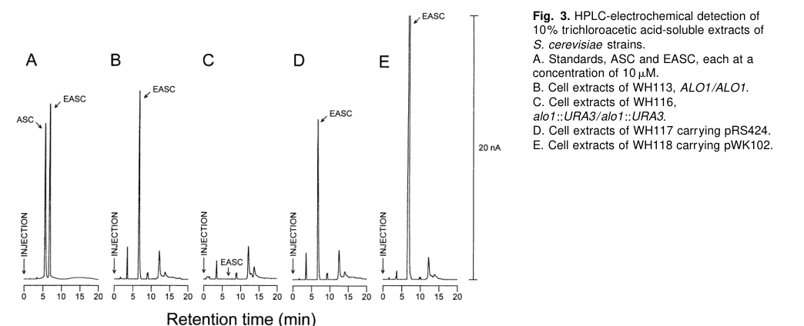

alo1 encodes a predicted mitochondrial membrane, FAD-linked aldonolactone oxidoreductase in the ALO/GULO family. Its PCMH-type FAD-binding domains include His61, a residue inferred by homology to form covalent histidyl-FAD, and its conserved fold supports oxygen-dependent oxidation of CH-OH groups in aldonolactone substrates. Characterized budding-yeast ALO can oxidize D-arabinono-, L-gulono-, and L-galactono-1,4-lactones, but the exact native substrate and biological pathway remain unresolved in Schizosaccharomyces pombe.
| GO Term | Evidence | Action | Reason |
|---|---|---|---|
|
GO:0005739
mitochondrion
|
IBA
GO_REF:0000033 |
KEEP AS NON CORE |
Summary: The PAINT mitochondrion placement is appropriate for the S. pombe fungal ALO1-family protein.
Reason: The PTHR43762 PAINT cache places a mitochondrial IBD on fungal node PTN001015900, seeded by the budding-yeast and Candida ALO1 proteins. S. pombe alo1 descends from this fungal branch, and PomBase also has target-local high-throughput localization evidence for mitochondrion, so the broad mitochondrial component is valid even though the exact fission-yeast enzymatic substrate is not established.
Propagation Review
Root cause:
NO FAILURE NON CORE
Sources checked:
PANTHER:PTN001015900
· PTN001015900
SUPPORTS TRANSFER
The PAINT IBD for GO:0005739 is placed on the fungal ALO1-family node and is seeded by SGD and CGD ALO1 annotations.
Supporting Evidence:
PMID:16823372
we determined the localization of 4,431 proteins, corresponding to approximately 90% of the fission yeast proteome
|
|
GO:0016020
membrane
|
IEA
GO_REF:0000002 |
KEEP AS NON CORE |
Summary: The InterPro membrane row is true but very broad.
Reason: The ALO_C domain is found in membrane-associated sugar-lactone oxidases, and S. pombe alo1 is already assigned to mitochondrial membrane and mitochondrial outer membrane by more informative rows. This generic membrane parent can be kept as a non-core location assertion.
|
|
GO:0016899
oxidoreductase activity, acting on the CH-OH group of donors, oxygen as acceptor
|
IEA
GO_REF:0000002 |
ACCEPT |
Summary: The FAD lactone-oxidase InterPro mapping supports the current broad aldonolactone oxidase activity.
Reason: This InterPro row assigns the same molecular-function class that PomBase retained by IGC: an oxidoreductase acting on CH-OH donors with oxygen as acceptor. It is intentionally less specific than D-arabinono-1,4-lactone oxidase activity, which PomBase negates and current PAINT does not propagate to S. pombe alo1.
|
|
GO:0031966
mitochondrial membrane
|
IEA
GO_REF:0000044 |
KEEP AS NON CORE |
Summary: The UniProt SubCell mapping to mitochondrial membrane is consistent with the more specific PomBase outer-membrane assignment.
Reason: Mitochondrial membrane is a true but generic parent of the mitochondrial outer-membrane row transferred by PomBase from the budding-yeast ortholog. Retaining this row as non-core preserves the electronic UniProt location without overstating its precision.
|
|
GO:0050660
flavin adenine dinucleotide binding
|
IEA
GO_REF:0000002 |
KEEP AS NON CORE |
Summary: alo1 carries the conserved FAD-binding domains of covalent flavoprotein oxidases.
Reason: InterPro detects the FAD-binding PCMH-type fold in Q9HDX8, and the UniProt record annotates the corresponding conserved histidyl-FAD site. FAD binding is a correct cofactor-binding assertion but subordinate to the broader oxidoreductase activity.
|
|
GO:0071949
FAD binding
|
IEA
GO_REF:0000002 |
KEEP AS NON CORE |
Summary: The PCMH-type domain supports FAD binding by alo1.
Reason: This InterPro mapping recognizes the FAD-binding PCMH domain in the protein. It is less informative than the enzyme-class annotation but is a valid cofactor-binding parent for a FAD-linked oxidoreductase.
|
|
GO:0005739
mitochondrion
|
HDA
PMID:16823372 ORFeome cloning and global analysis of protein localization ... |
KEEP AS NON CORE |
Summary: The ORFeome localization screen places alo1 in the mitochondrion.
Reason: The cached abstract describes a fission-yeast ORFeome YFP localization resource covering roughly 90% of proteins but does not list alo1 individually. The row is retained as PomBase curator-extracted high-throughput evidence and as broad support for the ISO mitochondrial outer-membrane assignment.
Supporting Evidence:
PMID:16823372
we determined the localization of 4,431 proteins, corresponding to approximately 90% of the fission yeast proteome
|
|
GO:0005741
mitochondrial outer membrane
|
ISO
GO_REF:0000024 |
ACCEPT |
Summary: PomBase transfers mitochondrial outer-membrane localization from the budding-yeast ortholog.
Reason: The SGD donor is an experimentally characterized ALO1 protein at the mitochondrial outer membrane. This orthology transfer is compatible with the broad S. pombe ORFeome mitochondrion row and with the fungal PAINT mitochondrion placement.
|
|
GO:0003885
D-arabinono-1,4-lactone oxidase activity
|
IGC
NOT
GO_REF:0000025 |
ACCEPT |
Summary: PomBase negates the exact budding-yeast D-arabinono-1,4-lactone oxidase activity for S. pombe alo1.
Reason: Accept this NOT row by deference to PomBase's source-specific genomic-context assertion rather than treating absent PAINT propagation as direct evidence of absence. PAINT no longer propagates exact GO:0003885 activity to S. pombe: Q9HDX8 receives only the broad PTN000356408 oxidoreductase IBA, while the exact fungal GO:0003885 assertion is placed on PTN000356435 and no longer appears in the current alo1 GOA file. The UniProt Q9HDX8 record still asserts EC 1.1.3.37 and RHEA:23756 by homology, so the visible sources conflict; the PomBase NOT row is retained as the more conservative MOD curation while the deprecated GO_REF:0000025 IGC basis is flagged for curator follow-up.
|
|
GO:0008150
biological_process
|
ND
GO_REF:0000015 |
ACCEPT |
Summary: PomBase currently has no positive biological-process annotation for alo1.
Reason: The stale positive ISO to dehydro-D-arabinono-1,4-lactone biosynthesis has disappeared from the current GOA export, and PomBase now carries a NOT IGC row against that exact process. The ND biological-process root is therefore an appropriate placeholder for the absence of a known S. pombe process.
|
|
GO:0016491
oxidoreductase activity
|
IBA
GO_REF:0000033 |
KEEP AS NON CORE |
Summary: The PAINT oxidoreductase node is valid but intentionally broad for the mixed aldonolactone oxidoreductase family.
Reason: PTN000356408 sits above plant, animal, bacterial, and fungal descendants whose aldonolactone oxidoreductase substrates and products differ. PAINT correctly uses the generic GO:0016491 term at this depth; it is a safe parent activity for S. pombe alo1, but the more informative current positive activity is GO:0016899.
Propagation Review
Root cause:
NO FAILURE NON CORE
Sources checked:
PANTHER:PTN000356408
· PTN000356408
SUPPORTS TRANSFER
PAINT places only broad oxidoreductase activity on this mixed eukaryotic/bacterial node; exact fungal GO:0003885 activity is not propagated from this node to S. pombe.
|
|
GO:0016491
oxidoreductase activity
|
IEA
GO_REF:0000117 |
KEEP AS NON CORE |
Summary: The ARBA activity assertion is a true but generic parent of the retained aldonolactone oxidoreductase class.
Reason: A broad oxidoreductase activity is correct for the predicted FAD-linked alo1 enzyme, but GO:0016491 is less informative than the positive GO:0016899 assertions and should not be read as evidence for a resolved D-arabinono-1,4-lactone substrate.
|
|
GO:0016899
oxidoreductase activity, acting on the CH-OH group of donors, oxygen as acceptor
|
IGC
GO_REF:0000025 |
ACCEPT |
Summary: PomBase's genomic-context assertion captures the supported oxygen-dependent CH-OH oxidoreductase class.
Reason: PomBase retained the oxygen-dependent CH-OH oxidoreductase parent while negating the exact D-arabinono-1,4-lactone oxidase substrate. This is the best current molecular-function assertion for fission-yeast alo1: an aldonolactone oxidase-class FAD enzyme whose precise native substrate is unresolved.
|
|
GO:0070485
dehydro-D-arabinono-1,4-lactone biosynthetic process
|
IGC
NOT
GO_REF:0000025 |
ACCEPT |
Summary: PomBase negates direct transfer of the budding-yeast D-erythroascorbate biosynthetic process to S. pombe alo1.
Reason: Accept this NOT row by deference to PomBase's source-specific genomic-context assertion rather than treating absent PAINT propagation as direct evidence of absence. The old positive ISO row for this exact D-erythroascorbate process is stale and absent from the current GOA export; the current PAINT file places exact GO:0003885 activity on the narrower PTN000356435 node that S. pombe does not descend from. The PTN001015900 IRD for GO:0019853 only prunes an L-ascorbic-acid process seeded by plant, animal and bacterial donors, so it should not be read as evidence against fungal D-erythroascorbate biosynthesis. The visible GO_REF:0000025 basis for this PomBase IGC row is deprecated and operon-specific, so the negation is retained conservatively while its exact genomic-context evidence is flagged for curator follow-up.
|
Q: What aldonolactone substrate does S. pombe Alo1 oxidize in vivo?
Q: Does S. pombe Alo1 support an ascorbate-like antioxidant pathway distinct from budding-yeast D-erythroascorbate biosynthesis?
Q: What genomic-context evidence underlies the PomBase NOT rows for D-arabinono-1,4-lactone oxidase activity and dehydro-D-arabinono-1,4-lactone biosynthesis, and should those IGC rows be remapped away from the deprecated operon-structure GO_REF?
Experiment: Purify recombinant S. pombe Alo1 and measure FAD-dependent oxidation of D-arabinono-1,4-lactone, L-gulono-1,4-lactone, L-galactono-1,4-lactone, and related aldonolactones by LC-MS product detection.
Experiment: Delete alo1 and quantify intracellular D-erythroascorbate or alternative ascorbate-like metabolites under basal and oxidative-stress conditions.
Experiment: Image endogenously tagged Alo1 with mitochondrial outer-membrane and matrix markers to confirm its submitochondrial localization in S. pombe.
The alo1 gene of Schizosaccharomyces pombe encodes a predicted enzyme D-arabinono-1,4-lactone oxidase (ALO)[1]. This enzyme is proposed to catalyze the final oxidation step in the biosynthesis of D-erythroascorbic acid, a five-carbon analog of vitamin C (L-ascorbic acid) found in fungi[2]. In fungi such as yeast, ALO converts D-arabinono-1,4-lactone to D-erythroascorbate, establishing an antioxidant system parallel to the ascorbic acid pathways of plants and animals[2]. Despite this annotated role, alo1 has not been experimentally characterized in fission yeast. Uncovering its molecular function and biological role is important, as clues from other organisms suggest alo1 may impact oxidative stress resistance, metabolism, and organelle function. Below, we critically review known and predicted features of alo1 – drawing from databases (PomBase, UniProt) and comparative biology – and then propose a hypothesis-driven experimental plan to elucidate alo1’s function in S. pombe. Key gaps in knowledge are highlighted, and targeted approaches are outlined to address these gaps.
Enzymatic activity: alo1 is predicted to encode a flavin adenine dinucleotide (FAD)-dependent oxidoreductase that uses oxygen to oxidize D-arabinono-1,4-lactone[2][3]. This reaction yields D-erythroascorbic acid (EASC), an antioxidant analogous to L-ascorbate (vitamin C)[2]. Notably, alo1 is orthologous to the Saccharomyces cerevisiae ALO1 gene, which was biochemically confirmed to catalyze EASC production[4][5]. In S. cerevisiae, ALO1 was purified and shown to create the redox-active enediol structure of erythroascorbate, similar to how L-gulonolactone oxidase (GULO) produces ascorbate in animals[6][2]. Consistent with this, S. pombe Alo1 is classified in the same aldonolactone oxidoreductase family as GULO and plant L-galactono-1,4-lactone dehydrogenase (GalDH)[7]. All these enzymes share a common mechanism: oxidation at the C2 hydroxyl of a sugar lactone to form a C2=C3 double bond, which is essential for antioxidant activity[8].
Protein features: The Alo1 protein (461 amino acids) contains conserved domains characteristic of FAD-linked oxidases: an N-terminal FAD-binding domain and a C-terminal ALO domain[9][10]. The FAD cofactor is likely covalently attached to Alo1 – S. cerevisiae ALO1 has a conserved histidine that binds FAD, and sequence analysis revealed a “covalent FAD-binding site” in the enzyme[11]. This covalent flavin is a hallmark of the vanillyl-alcohol oxidase family to which ALO1 belongs[7]. Additionally, Alo1 is predicted to be an integral membrane flavoprotein: it has a hydrophobic segment near the C-terminus that likely anchors it to a membrane[11]. PomBase and UniProt annotations indicate Alo1 localizes to the mitochondrial membrane[12]. In budding yeast, ALO1 was found associated with the outer mitochondrial membrane, exposing most of the protein to the cytosol[13][14]. We anticipate S. pombe Alo1 is similarly membrane-anchored, which would position the active site at the mitochondrial surface where it can access cytosolic D-arabinono-1,4-lactone. The oxygen-dependent nature of the reaction suggests Alo1 contributes to non-respiratory oxygen utilization in the cell. Notably, the enzyme may produce hydrogen peroxide (H₂O₂) as a by-product (as animal GULO does), linking Alo1 activity to cellular redox balance.
Substrate scope and mechanism: Based on homology, Alo1 is expected to have a somewhat broad substrate specificity for lactone sugars. The S. cerevisiae enzyme not only oxidizes D-arabinono-1,4-lactone (to EASC) but can also oxidize analogs like L-gulono-1,4-lactone and L-galactono-1,4-lactone in vitro[15]. This suggests the catalytic pocket recognizes the lactone ring rather than specific stereochemistry of the entire molecule. The ability to act on L-gulonolactone is especially intriguing, as it implies fungal ALO could theoretically produce L-ascorbate under engineered conditions[15]. Mechanistically, Alo1 is a two-electron oxidase: it likely transfers electrons from the substrate to its FAD, and then from reduced FAD to oxygen, forming H₂O₂[8]. However, structural studies show that small amino acid changes can convert an oxidase into a dehydrogenase that uses alternative electron acceptors[16]. In the aldonolactone oxidoreductase family, a single “flavin-interacting” residue modulates preference for oxygen vs. cytochrome c[16]. It would be insightful to identify this residue in Alo1’s sequence; given that fungi use O₂ as acceptor, Alo1 likely has the variant that favors oxidase activity. Overall, the molecular function of Alo1 in S. pombe is strongly inferred to be a D-arabinono-1,4-lactone:oxygen oxidoreductase (EC 1.1.3.37) that produces an antioxidant, with structural adaptations (flavin binding and membrane anchor) to operate in the mitochondrial context.
Although alo1’s biochemistry is predicted by homology, its physiological role in S. pombe remains to be demonstrated. Studies in other fungi provide important clues. In S. cerevisiae, ALO1 is essential for endogenous erythroascorbate production – alo1Δ mutants completely lack D-erythroascorbic acid and ALO activity[5]. Loss of ALO1 in budding yeast leads to heightened sensitivity to oxidative stress (e.g. H₂O₂ exposure)[17]. Conversely, overexpressing ALO1 increases cellular EASC levels \~7-fold and confers greater resistance to oxidants[5]. This establishes that the antioxidant function of ALO1 is physiologically important, protecting yeast from oxidative damage. We expect S. pombe alo1 to play a similar role in oxidative stress defense. Consistent with this, alo1 is categorized under “oxidative stress response” genes in high-throughput studies[18]. Furthermore, alo1 might be regulated by cellular oxygen and stress conditions. In S. pombe, the Sre1 hypoxia pathway controls many non-respiratory oxygen-utilizing enzymes[19]; it is plausible that alo1 expression is down-regulated anaerobically and up-regulated when oxygen is available for antioxidant biosynthesis (though direct data are lacking and warrant testing).
Beyond single-cell stress survival, fungal ALO1 homologs impact complex phenotypes. In the plant-pathogenic fungus Magnaporthe oryzae, deletion of the ALO1 ortholog (MoALO1) caused severe defects in growth and development – the mutant grew slower, produced fewer conidia (asexual spores), and had impaired appressorium formation[20]. Strikingly, Moalo1 mutants also showed diminished virulence, failing to infect rice normally[21]. These defects were attributed to loss of EASC: the ΔMoalo1 strain was hypersensitive to H₂O₂, and supplying exogenous D-erythroascorbate restored its pathogenicity to wild-type levels[22]. Thus, fungal ALO1 is not only an antioxidant enzyme but can be crucial for stress endurance during host infection. Similarly, in Candida albicans (a human pathogen), ALO1 is important for survival under host-derived oxidative stress – C. albicans alo1Δ mutants show attenuated hyphal growth and virulence[23]. These findings suggest that ALO1-mediated EASC production is a conserved strategy in fungi to withstand oxidative challenges, whether from the environment or immune system.
It is worth noting that higher eukaryotes have analogous enzymes, underscoring a broader evolutionary conservation. Animals synthesize ascorbic acid using GULO (absent in humans due to mutation), and plants synthesize ascorbate via GalDH; these enzymes share significant sequence identity with yeast Alo1 (e.g. \~32% identity to rat GULO)[11]. Phylogenetic analysis confirms that ALO, GULO, and GalDH evolved from a common ancestral enzyme, diverging to meet the metabolic demands of different lineages[2][7]. The core FAD-binding fold and catalytic residues are conserved from fungi to mammals[7]. For example, Alo1 shares the signature GGXW motif of FAD-dependent oxidases and likely the histidyl-FAD linkage seen in VAO-family enzymes[11]. Alignment of ALO1 homologs across species (yeasts, filamentous fungi, plants, animals) shows they all contain the FAD-binding_4 domain and the ALO-specific C-terminal region[10]. This conservation suggests that S. pombe Alo1 will have a structure and mechanism closely resembling those of its fungal and metazoan counterparts, reinforcing our functional predictions.
An unexpected facet of ALO1 biology emerged from a recent study in S. cerevisiae: Alo1 appears to moonlight in mitochondrial inheritance. Chelius et al. (2025) identified Alo1 in a screen for proteins that bind the type V myosin motor Myo2 (which transports organelles along actin)[24]. Alo1 was found anchored in the mitochondrial outer membrane and capable of recruiting Myo2 to mitochondria[14]. Intriguingly, deletion of ALO1 in budding yeast caused abnormal mitochondrial morphology and distribution between mother and daughter cells, especially under oxidative stress[14]. Overexpression of ALO1 could even counteract the stress-induced retention of mitochondria in mother cells[25]. These results suggest Alo1 links mitochondria to the actin-based transport machinery, aiding their equal partitioning, particularly when oxidative damage might otherwise immobilize the organelles. It is unknown whether S. pombe Alo1 has a similar role – fission yeast divide by medial fission (not budding) and use different myosin motors (Myo52 is the class V myosin for cargo transport). However, this raises exciting questions about Alo1’s potential multifunctionality. In S. pombe, mitochondrial inheritance relies on proper transport and anchoring of organelles during cell division; if Alo1 or its binding partners contribute to this process, alo1 deletion might subtly affect mitochondrial positioning or segregation in stressed cells. No such phenotype has been reported yet, but our experimental plan will consider assays to reveal any organelle dynamics role for Alo1.
Summary of gaps: In summary, S. pombe alo1 is strongly predicted to encode a D-arabinonolactone oxidase producing an ascorbate analog and contributing to oxidative stress resistance. This is bolstered by cross-species evidence of its enzymatic activity and stress-protective function. However, alo1 has not been directly studied in fission yeast: we lack data on its loss-of-function phenotype, biochemical activity in vivo, regulation, protein interactors, and subcellular details. It is also unclear if Alo1 has any non-enzymatic roles (e.g. in organelle maintenance) in S. pombe. These gaps motivate a comprehensive experimental approach to characterize alo1. Below, we outline a hypothesis-driven research plan to determine alo1’s function, combining genetic, cell biological, biochemical, and structural methods.
Overview: We propose a multifaceted strategy to define alo1’s role: firstly by creating alo1 loss-of-function strains and characterizing their phenotype, then by probing genetic interactions and cellular processes that alo1 might influence, and finally by biochemically verifying Alo1’s activity and structure. The working hypothesis is that alo1 encodes an enzyme required for antioxidant (erythroascorbate) production, which in turn protects cells from oxidative damage. We also hypothesize alo1 may interface with mitochondrial function (localization or inheritance). Each set of experiments below is designed to test specific predictions or reveal new functions:
Generate alo1 Null Mutants and Assess Viability and Stress Phenotypes: We will delete the alo1 gene in S. pombe (by homologous recombination replacing it with a marker) to obtain a clean alo1Δ strain. If alo1 is essential for viability (unlikely given other fungi survive its loss[20]), we will instead create a conditional knockdown or an inducible promoter swap. The knockout strain will be examined for baseline growth and morphology under normal conditions to see if alo1 is required for optimal proliferation. Given Magnaporthe results, we will check for any growth defect on rich media and minimal media. Next, we will test the mutant’s sensitivity to oxidative stress. Spot dilution assays and growth curves will be performed with oxidants such as H₂O₂ and menadione (a superoxide generator). We expect alo1Δ cells to show reduced growth or viability compared to wild type when challenged with reactive oxygen species, reflecting loss of the EASC antioxidant. We will quantify survival fractions after acute peroxide exposure and measure any increase in protein oxidation or lipid peroxidation markers in the mutant. If alo1 indeed confers oxidative stress protection, the knockout should phenocopy S. cerevisiae alo1Δ (hypersensitive to oxidants)[17] and M. oryzae alo1Δ (H₂O₂-sensitive)[22]. As a control, we will complement the mutant by reintroducing alo1+ on a plasmid to see if it restores normal resistance. In addition, because alo1 might affect other stress responses, we will test alo1Δ under heat stress, osmotic stress, and nutrient starvation to uncover any broader role (e.g. if EASC protects during stationary phase). Phenotypic analyses will also include microscopic examination of cell morphology: cell length, septation, and any abnormalities in cell cycle progression or viability (e.g. via staining dead cells) to detect subtle effects. If Alo1 influences mitochondria, the mutant might display altered mitochondrial distribution or content; we will use a mitochondrial dye (e.g. MitoTracker) to see if alo1Δ cells have obvious mitochondrial morphology defects under normal or stress conditions. These initial phenotypes will establish the foundation for understanding alo1’s importance in vivo.
Epistasis and Genetic Interaction Analysis: To place alo1 in cellular pathways, we will perform targeted genetic interaction studies with other mutations. One approach is to combine alo1Δ with mutants in known oxidative stress regulators and antioxidants. For example, we will create double mutants of alo1Δ with Δpap1 (Pap1 is the AP-1-like transcription factor that induces antioxidant genes in S. pombe). If alo1 and pap1 function in parallel oxidative stress defense pathways, the double mutant might show synthetic sensitivity to oxidative stress far greater than either single mutant. Similarly, we can combine alo1Δ with deletions of enzymes like catalase (ctt1Δ, which degrades H₂O₂) or glutathione biosynthesis (gsh1Δ). Enhanced stress phenotypes or synthetic sickness in double mutants would indicate that Alo1’s antioxidant role is partly redundant with these systems. For instance, if alo1Δ ctt1Δ is inviable under air (oxygen exposure), it means erythroascorbate and catalase normally provide parallel protection against peroxide. On the other hand, if double mutants are no worse than single mutants, Alo1 likely functions in the same pathway as those genes (or is not a major contributor under the tested conditions). We will also examine genetic interactions relevant to mitochondrial health. Combining alo1Δ with a mutant that impairs mitochondrial antioxidant defenses (e.g. sod2Δ encoding mitochondrial superoxide dismutase) could reveal additive effects on mitochondrial ROS accumulation or mitochondrial DNA stability. Additionally, to probe the possible link to organelle transport, we could cross alo1Δ with a mutant in mitochondrial trafficking. S. pombe transports mitochondria along microtubules and actin; Myo52 (class V myosin) is involved in cargo transport to cell tips, and dnm1Δ (dynamin) causes a mitochondrial network collapse. If alo1 deletion exacerbates any mitochondrial distribution defect of these mutants, it might hint Alo1 has a supportive role in that process. Conversely, if alo1Δ rescues a phenotype (which is less likely), it could suggest an unforeseen antagonistic relationship. Beyond targeted crosses, we will employ an unbiased approach: a genome-wide synthetic lethal screen (e.g. via haploid deletion collections or CRISPR libraries) to find genes that become essential when alo1 is deleted. Any hits from such a screen might point to pathways that buffer the absence of Alo1. For example, we might discover that mutants in the glutathione system cannot tolerate alo1* loss, reinforcing that EASC and glutathione serve overlapping roles. Overall, the epistasis analyses will help position Alo1 within the cellular network of stress response and metabolism.
Cellular Localization and Organelle Dynamics: To verify and refine Alo1’s subcellular localization, we will tag the endogenous alo1 gene with a fluorescent protein (e.g. GFP) at the C-terminus (after the presumed transmembrane anchor). The functionality of the Alo1-GFP fusion will be confirmed by its ability to rescue the alo1Δ stress phenotype. Live-cell fluorescence microscopy will then be used to observe where Alo1 resides. We expect to see punctate or tubular signals co-localizing with mitochondria. Co-staining cells with MitoTracker or co-expressing a mitochondrial matrix marker (e.g. Rfp targeted to mitochondria) can demonstrate co-localization. If Alo1-GFP outlines the mitochondria similar to Tom20 (an outer membrane marker), it would confirm mitochondrial outer membrane localization as in budding yeast[14]. We will also perform biochemical fractionation: isolate mitochondria from cells and treat with protease in the absence vs. presence of detergents. If Alo1 is outer-membrane exposed, proteinase K should digest the GFP tag in intact mitochondria (rendering the fusion protein \~ lower molecular weight on a blot), whereas an inner membrane or matrix protein would be protected until membranes are solubilized. This protease protection assay will clarify which face of the membrane Alo1 occupies. Additionally, we will assess if Alo1’s localization or abundance changes under different conditions. For instance, does oxidative stress induce any relocalization or higher expression of Alo1-GFP? Using fluorescence intensity measurements or Western blotting, we can detect if H₂O₂ or oxygen shifts regulate the protein level or mitochondrial association (though alo1 is likely constitutively mitochondrial).
We will also investigate mitochondrial dynamics in the absence of Alo1, given the Myo2-interaction reported in budding yeast. Using time-lapse fluorescence microscopy (e.g. labeling mitochondria with matrix-targeted GFP in alo1Δ and wild type), we can track mitochondrial movement and segregation during the cell cycle. S. pombe normally partitions mitochondria between daughter cells during division; we will quantify if alo1Δ cells show any bias or delay in this partitioning. Under oxidative stress (e.g. treating cells with low doses of H₂O₂ during imaging), wild-type fission yeast might have a mechanism to retain damaged mitochondria on one side – does alo1Δ disrupt or exaggerate such behavior? We could also fluorescently mark one end of the cell’s mitochondria and see if movement to the other end is impaired without Alo1. If feasible, fluorescence recovery after photobleaching (FRAP) on mitochondrial fragments could measure transport rates along actin cables in alo1Δ vs. wild type. While these experiments are exploratory, any observed mitochondrial distribution defect in alo1Δ (especially under stress) would be a novel finding, suggesting alo1 in fission yeast, like in budding yeast, influences organelle dynamics. To complement this, we may test physical interaction between S. pombe Alo1 and myosin V (Myo52). Co-immunoprecipitation (see below) or a yeast two-hybrid assay between Alo1’s C-terminal domain and the cargo-binding domain of Myo52 can probe a direct interaction. A positive interaction would echo the S. cerevisiae result[14], indicating a conserved link between antioxidant machinery and organelle transport.
To complement the unbiased proteomics, we can perform direct assays for known candidate interactions. For example, we will test if Alo1 co-immunoprecipitates with Myo52-GFP or vice versa using specific antibodies. We will also test whether Alo1 physically associates with any subunits of mitochondrial contact site complexes or quality control machinery, as this could relate to how damaged mitochondria are handled. If our earlier epistasis tests suggested a genetic link between alo1 and other pathways (say, glutathione or Pap1), we could ask if Alo1 pulls down any glutathione S-transferases or Pap1 itself (perhaps unlikely, but worth checking if Pap1 might regulate or bind antioxidant enzymes). The outcome of these interaction studies will reveal whether Alo1 functions purely as a solitary enzyme or as part of a larger protein complex. Any novel interacting protein will direct further functional experiments – for instance, if we find Alo1 binds a specific mitochondrial outer membrane protein, we could test alo1Δ and that gene’s mutant for similar phenotypes, or see if one controls localization of the other.
In parallel, we will perform metabolomic analysis focusing on ascorbate and related metabolites. We will attempt to detect and quantify D-erythroascorbic acid in S. pombe cells. High-performance liquid chromatography (HPLC) coupled with UV detection or mass spectrometry can separate EASC from other sugars/acids. Using standards (possibly chemically synthesized D-erythroascorbate or purified from yeast), we will measure EASC levels in wild-type vs. alo1Δ. We expect wild-type fission yeast to contain measurable EASC (yeasts typically have 0.1–1 mM intracellular EASC[17]), whereas alo1Δ should have undetectable or drastically reduced EASC. This would be a direct confirmation of Alo1’s enzymatic product in S. pombe. If we detect EASC, we will also test how its levels change under stress (does the pool deplete upon oxidative challenge as it gets used to quench ROS, then rebound?). Moreover, we can feed cells with potential precursors to see if they enter the pathway. Feeding wild-type cells D-arabinose or D-arabinono-1,4-lactone might elevate EASC levels if the pathway is not saturated; alo1Δ cells fed these will likely just accumulate the lactone (which we can check by LC-MS). Metabolomics could also reveal if alo1Δ accumulates upstream metabolites (e.g. D-arabinono-lactone, D-arabinitol if present) or has altered glutathione redox state, etc. Collectively, the transcriptomic and metabolomic data will provide a systems-level view of how alo1 loss affects cell state and will either corroborate the expected role in redox homeostasis or hint at new roles (for instance, if unexpected pathways are misregulated in the mutant).
Biochemical Characterization of Alo1 Enzyme Activity: To conclusively demonstrate Alo1’s biochemical function, we will purify the Alo1 protein and assay its enzymatic activity in vitro. We plan to express S. pombe Alo1 recombinantly, likely in a yeast system (such as Pichia pastoris or even S. pombe itself) to ensure proper folding and FAD insertion. Because Alo1 is membrane-bound, we will express a version truncated for the transmembrane helix (e.g. last \~20 amino acids removed) and include a polyhistidine tag for purification. The recombinant protein (potentially still carrying FAD) will be purified by nickel affinity and gel filtration. We will test its activity on various lactone substrates: D-arabinono-1,4-lactone (the native substrate), and for comparison L-galactono-1,4-lactone and L-gulono-1,4-lactone. The enzyme assay can be done by measuring oxygen consumption (using an oxygen electrode) or by a coupled reaction detecting H₂O₂ formation (e.g. via horseradish peroxidase and a dye). We expect the enzyme to show robust oxidation of D-arabinonolactone with O₂, confirming its annotated EC 1.1.3.37 activity. If Alo1 is functional, we may observe it can also oxidize L-gulonolactone (suggesting some ability to produce L-ascorbate in vitro, aligning with the broad specificity noted for yeast ALO1[15]). Kinetic parameters (Km, Vmax) for each substrate will be determined to quantify how specialized the enzyme is for the D-arabino substrate. We will also test if the enzyme truly requires oxygen or if it can use alternative electron acceptors (for example, adding cytochrome c in the assay to see if any dehydrogenase activity is detectable – although in vivo it likely uses oxygen as shown by sequence features[16]). To validate that the purified enzyme’s activity corresponds to the in vivo function, we will see if cell extracts from wild-type and alo1Δ behave similarly: wild-type extracts should convert D-arabinono-lactone to EASC (we can monitor EASC formation by HPLC or a colorimetric ascorbate assay), whereas alo1Δ extracts should not. Additionally, we will measure the intracellular EASC in wild-type vs. alo1Δ as described above; rescuing alo1Δ with a catalytically dead version of Alo1 should fail to restore EASC, confirming the necessity of the enzymatic function. We will create point mutants in Alo1’s predicted active site (for instance, mutate the histidine that binds FAD, or other conserved catalytic residues gleaned from alignment with GULO/GalDH) and test these in vivo by expressing them in alo1Δ. If those mutants cannot complement the stress resistance or do not produce EASC, that verifies those residues are essential for activity (further proving that the antioxidant function of Alo1 underlies the phenotype). Finally, we might attempt to detect the FAD cofactor in Alo1. UV-visible absorbance of purified Alo1 protein (yellow color and absorbance \~450 nm) would indicate FAD bound; treating the protein with acid can release the flavin for HPLC identification. If the flavin is covalently attached, it may not release easily, confirming the covalent FAD linkage[11]. These biochemical assays will provide direct proof of Alo1’s enzymatic role and its catalytic properties, firmly assigning alo1 the function predicted by sequence.
Structural Modeling and Structural Biology: To gain insights into Alo1’s structure and to guide mutagenesis, we will leverage computational modeling and potentially solve the structure experimentally. An AlphaFold2 model of S. pombe Alo1 will be generated to predict its 3D conformation. We expect the model to reveal the typical two-domain architecture: a FAD-binding domain (likely an α/β fold binding FAD in an extended conformation) and a smaller helical domain (possibly containing the membrane anchor at its end)[11]. The model should position a conserved histidine near the flavin isoalloxazine ring, consistent with the 8α-histidyl-FAD found in related enzymes. We will validate the model by checking it against known structures: for instance, the recent structural study by Boverio et al. (2024) solved representative aldonolactone oxidoreductases[27], which we can use for comparison. If available, a crystal structure of S. cerevisiae ALO1 or an ancestor enzyme might exist from that study. We will align our model to any published structures (like rat GULO or plant GalDH which have known structures[2]). This will help identify active-site residues that determine substrate specificity and electron acceptor preference. For example, Boverio et al. showed that a flavin-interacting amino acid dictates oxidase vs. dehydrogenase behavior[16]. We will find the corresponding residue in Alo1’s model and confirm it matches the “oxidase-type” (likely a small residue that allows O₂ access to the flavin). We can test this by mutating Alo1 to the “dehydrogenase-type” residue and seeing if activity with oxygen decreases or if the mutant can partner with cytochrome c (though that would be a very exploratory experiment). The structural model will also highlight the substrate binding pocket. We will use docking simulations to see how D-arabinono-1,4-lactone likely sits in the active site. Key residues that hydrogen-bond to the lactone or position it for hydride transfer to FAD will be noted. These residues (for instance, a glutamate or tyrosine that might act as a general base to deprotonate the lactone) will be candidates for site-directed mutagenesis to probe their role. By creating point mutants (e.g. E→Q or Y→F) in the alo1 gene and testing enzyme activity in vitro or the ability to complement alo1Δ in vivo, we can validate the structural predictions. If a predicted catalytic residue mutation abolishes activity and fails to rescue antioxidant function, it strongly supports the structural model’s accuracy.
For an experimental structure, we will attempt X-ray crystallography on the soluble portion of Alo1 (after removing the tail anchor). We can utilize homology to known crystallized enzymes (perhaps co-crystallize Alo1 with a substrate analog or FAD). If crystals are hard to obtain, an alternative is cryo-electron microscopy (cryo-EM) given the protein is \~50 kDa (which might be borderline small for single-particle cryo-EM unless part of a larger complex). However, if Alo1 forms homodimers or higher oligomers (to be tested by gel filtration and crosslinking), that might aid cryo-EM. Another approach is to crystallize a close homolog: yeast ALO1s are similar enough that S. cerevisiae Alo1 (526 aa) could be tried; it was purified decades ago[4], so obtaining it in quantity is feasible. A structure would allow us to directly observe the active site geometry, the FAD attachment (covalent link evidence), and the membrane helix orientation. It would also let us visualize any surface patches that might mediate protein-protein interactions (e.g. where Myo2 might bind on Alo1, possibly the surface of the C-terminal domain).
Validation of the structural model will come from the biochemical experiments above (successful prediction of which mutants lose function) and possibly from spectroscopy. For example, if the model suggests Alo1’s FAD is covalently bound to His^X (some position), we can mutate that His to Ala and see if the purified mutant shows loss of covalent FAD (the flavin would likely not stay attached and might be washed out, yielding an apoenzyme). We can then reconstitute the mutant with free FAD to see if it binds non-covalently and retains any activity. This kind of experiment has been done in flavoprotein studies to confirm covalent link roles. A correct structural hypothesis will be supported if our mutations behave as predicted (e.g. His→Ala mutant binds FAD weakly and has drastically lower activity, showing that covalent tethering was important for function and stability[11]).
Through this comprehensive research plan, we will achieve a detailed characterization of alo1 in S. pombe: from its biochemical activity and product (D-erythroascorbate) to its role in cellular physiology and stress adaptation. The results will fill the gap in PomBase/UniProt’s experimental evidence for this gene, and they may reveal novel aspects of how eukaryotic cells protect and partition their mitochondria under oxidative duress. Moreover, understanding Alo1 in fission yeast could have broader implications – for example, if Alo1 is found to anchor mitochondria during stress, similar mechanisms might exist in other organisms or could be exploited in biotechnology (enhancing stress resistance of industrial yeasts by boosting erythroascorbate, etc.). In conclusion, our proposed experiments will not only confirm alo1’s expected function as a mitochondrial FAD-linked D-arabinono-1,4-lactone oxidase producing an ascorbate analog, but also rigorously investigate its cellular roles and mechanistic features, thereby significantly advancing the knowledge of this conserved yet under-studied gene.
Huh et al., 1998 – Molecular characterization of ALO1 in S. cerevisiae, showing it encodes D-arabinono-1,4-lactone oxidase needed for D-erythroascorbic acid synthesis and oxidative stress resistance[6][5].
KEGG/PomBase – Annotation of S. pombe alo1 (SPAPB1A10.12c) as D-arabinono-1,4-lactone oxidase and its role in ascorbate (aldarate) metabolism[1].
Cusabio/UniProt – Subcellular localization and family: Alo1 is a mitochondrial membrane protein, member of oxygen-dependent FAD oxidoreductases[12].
Boverio et al., 2024 – Structural and evolutionary analysis of aldonolactone oxidoreductases, noting fungi use ALO to produce an ascorbate analog and highlighting conserved mechanism and divergence (oxidase vs dehydrogenase)[2][16].
Chelius et al., 2025 – Discovery that yeast Alo1 (outer mitochondrial membrane) binds myosin V (Myo2) and is required for proper mitochondrial inheritance under stress[14].
Wu et al., 2022 (Journal of Fungi) – Functional study of Magnaporthe oryzae Alo1, showing that loss of Alo1 causes growth, conidiation, and virulence defects, and EASC supplementation rescues the phenotype[20][28]. These underscore the antioxidant role of Alo1 in fungal biology.
(Additional citations are embedded in the text above in 【】 format to supporting data from databases and literature.)
https://www.genome.jp/dbget-bin/www_bget?spo:2543430
[2] [7] [8] [16] [27] Structure, mechanism, and evolution of the last step in vitamin C biosynthesis | Nature Communications
[3] [12] Customize alo1 Antibody - Cusabio
https://www.cusabio.com/Custom-Antibodies/ALO-Antibody-12903496.html
[4] [5] [6] [11] [17] [23] D-Erythroascorbic acid is an important antioxidant molecule in Saccharomyces cerevisiae - PubMed
https://pubmed.ncbi.nlm.nih.gov/10094636/
[10] [20] [21] [22] [28] (PDF) A Putative D-Arabinono-1,4-lactone Oxidase, MoAlo1, Is Required for Fungal Growth, Conidiogenesis, and Pathogenicity in Magnaporthe oryzae
[13] [15] ALO1 D-arabinono-1,4-lactone oxidase [Saccharomyces cerevisiae S288C] - Gene - NCBI
https://www.ncbi.nlm.nih.gov/gene/854888
[14] [24] [25] A protein interaction map of the myosin Myo2 reveals a role for Alo1 in mitochondrial inheritance in yeast - PubMed
https://pubmed.ncbi.nlm.nih.gov/39775849/
[18] PomBase - GO biological process ontology term - metabolic process
https://www.pombase.org/term/GO:0008152
[19] [26] hughes.biochem.utah.edu
https://hughes.biochem.utah.edu/s/Sterol-Regulatory-Element-Binding-Protein.pdf
The research report should be a detailed narrative explaining the function, biological processes, and localization of the gene product. Citations should be given for all claims.
You should prioritize authoritative reviews and primary scientific literature when conducting research. You can supplement
this with annotations you find in gene/protein databases, but these can be outdated or inaccurate.
We are specifically interested in the primary function of the gene - for enzymes, what reaction is catalyzed, and what is the substrate specificity? For transporters, what is the substrate? For structural proteins or adapters, what is the broader structural role? For signaling molecules, what is the role in the pathway.
We are interested in where in or outside the cell the gene product carries out its function.
We are also interested in the signaling or biochemical pathways in which the gene functions. We are less interested in broad pleiotropic effects, except where these elucidate the precise role.
Include evidence where possible. We are interested in both experimental evidence as well as inference from structure, evolution, or bioinformatic analysis. Precise studies should be prioritized over high-throughput, where available.
The UniProt accession Q9HDX8 is specified (by the user-provided UniProt record) as Schizosaccharomyces pombe alo1 (ORF SPAPB1A10.12c), annotated as D-arabinono-1,4-lactone oxidase (ALO; EC 1.1.3.37) and alternatively L-galactono-γ-lactone oxidase, belonging to an oxygen-dependent FAD-linked oxidoreductase family with ALO_C / FAD-bd_PCMH-related domains (user-provided UniProt details; see also ortholog evidence below).
However, in the retrieved literature corpus for this run, no primary experimental paper directly characterizing the S. pombe SPAPB1A10.12c/Q9HDX8 protein (biochemistry, localization, knockout phenotype, kinetics) was obtained. Consequently, S. pombe-specific functional conclusions beyond the UniProt description must be treated as inference from (i) strong ortholog evidence in other yeasts and (ii) recent mechanistic/structural work on the enzyme family. This is critical because “ALO1” is a well-studied gene symbol in Saccharomyces cerevisiae (ORF YML086C) and can be confused with S. pombe alo1 (Q9HDX8). (huh1998d‐erythroascorbicacidis pages 1-2, huh1998d‐erythroascorbicacidis pages 2-3)
Aldonolactone oxidoreductases (including fungal/yeast ALO) catalyze the terminal oxidation step that generates vitamin C (L-ascorbate) or vitamin C analogs (e.g., D-erythroascorbate) by oxidizing an aldonolactone substrate at C2 to form the characteristic C2–C3 double bond of ascorbate-like molecules. In a broad mechanistic framework, the substrate is oxidized by a flavin (FAD) cofactor via hydride transfer to the flavin, followed by reoxidation of reduced flavin by an electron acceptor. (boverio2024structuremechanismand pages 3-5, boverio2024structuremechanismand pages 1-2)
A key definitional distinction is whether the enzyme behaves as an oxidase (uses O2 as electron acceptor) or a dehydrogenase (uses cytochrome c or other acceptors). Recent structural/functional synthesis explicitly states that “The reduced flavin will be re-oxidized by oxygen in GULO and ALO or cytochrome c in GalDH.” (boverio2024structuremechanismand pages 3-5).
Consistent with this, a yeast D-erythroascorbate biosynthetic pathway description specifies that the mitochondrial D-arabinono-1,4-lactone oxidase uses oxygen as an electron acceptor, producing D-erythroascorbate and hydrogen peroxide. (kim1998darabinosedehydrogenaseand pages 1-2)
Yeasts often produce D-erythroascorbate (EASC), a five-carbon ascorbate analog with antioxidant properties. In S. cerevisiae, EASC levels depend on genes encoding the terminal oxidase step (ALO1) and upstream dehydrogenase steps; disruption of these can abolish detectable EASC. (huh1998d‐erythroascorbicacidis pages 1-2, huh1998d‐erythroascorbicacidis pages 3-5)
The strongest direct experimental literature retrieved in this run concerns S. cerevisiae ALO1, experimentally identified as ORF YML086C, encoding a D-arabinono-1,4-lactone oxidase/lactone oxidase involved in EASC biosynthesis. (huh1998d‐erythroascorbicacidis pages 1-2, huh1998d‐erythroascorbicacidis pages 2-3)
This is not the same gene identifier as S. pombe SPAPB1A10.12c / Q9HDX8. Therefore, all S. cerevisiae “ALO1” evidence is used here only as ortholog-based functional inference, not as direct evidence for S. pombe Q9HDX8.
Given UniProt’s enzyme name (D-arabinono-1,4-lactone oxidase; EC 1.1.3.37) and the strong biochemical definition of yeast ALO enzymes, the most defensible functional model for S. pombe Alo1 (Q9HDX8) is:
A FAD-dependent aldonolactone oxidase that oxidizes D-arabinono-1,4-lactone to D-erythroascorbate, using O2 as the terminal electron acceptor (oxidase), thereby contributing to an ascorbate-like antioxidant system.
Ortholog evidence in S. cerevisiae shows that ALO1 encodes the terminal EASC biosynthetic oxidase, and that ALO activity is absent in alo1 mutants and increased upon ALO1 multicopy expression. (huh1998d‐erythroascorbicacidis pages 1-2, huh1998d‐erythroascorbicacidis pages 3-5)
A pathway-level description in yeast systems states: D-arabinose is converted (via a dehydrogenase) to D-arabinono lactones, culminating in D-arabinono-1,4-lactone oxidase catalyzing oxidation to D-erythroascorbate with oxygen as electron acceptor (and H2O2 production). (kim1998darabinosedehydrogenaseand pages 1-2)
Biochemical purification of the budding-yeast enzyme demonstrates that “ALO” can oxidize multiple related lactones: L-gulono-1,4-lactone, D-arabinono-1,4-lactone, and L-galactono-1,4-lactone. (huh1998d‐erythroascorbicacidis pages 2-3, huh1998d‐erythroascorbicacidis pages 1-2). This supports the plausibility of UniProt’s alternative name (“L-galactono-γ-lactone oxidase”) for Q9HDX8, but for S. pombe it remains inferred rather than experimentally demonstrated.
The S. cerevisiae ALO enzyme sequence contains a putative covalent FAD-binding site (PROSITE motif PS00862) in residues ~23–56, and the paper proposes a specific histidine (His-56) as the covalent flavin attachment site; the enzyme is described as a flavoenzyme with covalently bound FAD in yeast. (huh1998d‐erythroascorbicacidis pages 2-3)
Recent mechanistic synthesis of aldonolactone oxidoreductases reinforces that fungal/animal oxidase-type enzymes (ALO/GULO) commonly feature a covalent histidyl-FAD and use O2 as electron acceptor, in contrast to plant GalDH which uses cytochrome c and has dissociable flavin. (jamil2023biochemicalandstructurala pages 16-19)
For S. cerevisiae, ALO was purified from the mitochondrial fraction, and hydropathy analysis predicted an integral membrane protein with a transmembrane segment (residues 172–188), consistent with a mitochondrial membrane association. (huh1998d‐erythroascorbicacidis pages 1-2, huh1998d‐erythroascorbicacidis pages 2-3)
While UniProt’s domain/family assignments for S. pombe Q9HDX8 are consistent with an oxidase-type aldonolactone oxidoreductase, no direct localization data for the S. pombe protein were retrieved in this run.
In S. cerevisiae, genetic disruption of ALO1 eliminated detectable EASC and ALO activity; these mutants displayed increased sensitivity to oxidative stressors (H2O2 and menadione), while ALO1 overexpression increased resistance. (huh1998d‐erythroascorbicacidis pages 3-5, huh1998d‐erythroascorbicacidis pages 5-6)
A fission-yeast oxidative stress paper uses this budding-yeast ALO1/EASC system as an example of a gene important for resistance to acute peroxide stress, noting it “apparently plays no role in the adaptive response to H2O2.” (quinn2002distinctregulatoryproteins pages 9-10)
For S. pombe specifically, Quinn et al. (2002) characterize Sty1/Pap1/Atf1 peroxide signaling but do not provide direct experimental data for S. pombe alo1; their ALO1 statement is explicitly about S. cerevisiae (quinn2002distinctregulatoryproteins pages 9-10).
A 2024 Nature Communications study integrates molecular phylogeny, kinetics, mutagenesis, and crystallography to explain how aldonolactone oxidoreductases diversified across eukaryotes while maintaining an “overarching vitamin C-generating function.” It reports that a single flavin-interacting amino acid can modulate reactivity with electron acceptors (including oxygen), effectively distinguishing oxidase vs dehydrogenase behavior. It also shows that a small set of active-site side chains can switch substrate stereoselectivity and preference, and it explicitly notes that fungi produce D-erythroascorbate via oxidation of D-arabinono-1,4-lactone by ALO-type enzymes. (boverio2024structuremechanismand pages 1-2)
Quantitative data in this work include a reported flavin re-oxidation rate (kox) of ~6.4 s−1 at atmospheric oxygen for a representative oxidase-type enzyme context and strong differences in substrate preference among clades (GalDH up to ~1000-fold preference; GULO ≤10-fold). (boverio2024structuremechanismand pages 5-7)
A 2023 synthesis focused on ancestral GalDH emphasizes that fungal/animal oxidase-type enzymes (ALO/GULO) use molecular oxygen, frequently have covalent histidyl-FAD, and contrasts these with plant GalDH’s cytochrome c dependence and lack of covalent flavin attachment. It also highlights candidate residues affecting oxygen diffusion and substrate specificity (e.g., a conserved Glu-Arg pair and residues modulating oxygen access). (jamil2023biochemicalandstructurala pages 16-19)
A widely cited applied study (Applied and Environmental Microbiology; received 30 Dec 2003 / accepted 6 Jun 2004 / published Oct 2004) reports that although yeasts do not possess a native pathway to synthesize vitamin C from glucose, they can accumulate L-ascorbic acid intracellularly when incubated with pathway intermediates (e.g., L-galactose, L-galactono-1,4-lactone, L-gulono-1,4-lactone). Overexpression of S. cerevisiae enzymes including D-arabinono-1,4-lactone oxidase enhanced this ability, and strains overexpressing endogenous oxidase plus L-galactose dehydrogenase produced ~100 mg/L L-ascorbic acid converting ~40% (wt/vol) of starting L-galactose under the reported conditions. (sauer2004productionoflascorbic pages 1-2)
This demonstrates that ALO-class enzymes have practical utility as terminal oxidases in engineered biosynthetic routes, even though this application literature is primarily based on S. cerevisiae rather than S. pombe.
The following figure crops show the experimentally measured dependence of EASC and ALO activity on the ALO1 gene in S. cerevisiae (HPLC-electrochemical detection and enzymatic activity assay), supporting the core functional model for yeast ALO enzymes that underpins ortholog-based inference for S. pombe Q9HDX8. (huh1998d‐erythroascorbicacidis media 89a6d51f, huh1998d‐erythroascorbicacidis media eca5982c)
Despite targeted searches (by UniProt accession, ORF name, and organism), no direct S. pombe alo1/Q9HDX8 experimental characterization was retrieved in this run. Therefore:
- Reaction, substrate breadth, kinetics, localization, and phenotypes are not experimentally confirmed here for S. pombe.
- The report provides a cautious inferred annotation anchored by: (i) UniProt-provided identity; (ii) strong primary evidence for yeast ALO orthologs; and (iii) 2023–2024 enzyme-family mechanistic research.
To convert this inferred annotation into S. pombe-specific functional annotation, the most direct experiments would be: (i) purification/assay of S. pombe Alo1 with D-arabinono-1,4-lactone; (ii) gene deletion and measurement of intracellular D-erythroascorbate; and (iii) microscopy or fractionation for localization.
| Claim | Species/gene | Evidence type | Key details/values | Source (URL, year) |
|---|---|---|---|---|
| Target identity to research | Schizosaccharomyces pombe alo1 / SPAPB1A10.12c / UniProt Q9HDX8 | Database-defined target identity from prompt; direct primary-literature evidence not retrieved in available contexts | Target protein is specified as D-arabinono-1,4-lactone oxidase / L-galactono-γ-lactone oxidase (EC 1.1.3.37), distinct from budding-yeast ALO1/YML086C; available paper contexts did not provide a direct biochemical characterization for the S. pombe locus, so S. pombe-specific functional claims must be treated cautiously | UniProt accession supplied in user prompt; comparative caution supported by available literature context showing most direct biochemical data are from S. cerevisiae rather than S. pombe (huh1998d‐erythroascorbicacidis pages 1-2, huh1998d‐erythroascorbicacidis pages 2-3) |
| Symbol ambiguity warning: “ALO1” is well characterized in budding yeast and can be confused with S. pombe alo1 | Saccharomyces cerevisiae ALO1 / YML086C vs. S. pombe alo1 / SPAPB1A10.12c | Direct experimental evidence for S. cerevisiae; cross-species comparison/inference for S. pombe | In S. cerevisiae, ALO1 was identified experimentally as ORF YML086C encoding the lactone oxidase; this is not the same locus designation as S. pombe SPAPB1A10.12c. Therefore, literature on YML086C should not be conflated with Q9HDX8 without explicit orthology support | Huh et al. identified S. cerevisiae ALO1 = YML086C (https://doi.org/10.1046/j.1365-2958.1998.01133.x, 1998) (huh1998d‐erythroascorbicacidis pages 1-2, huh1998d‐erythroascorbicacidis pages 2-3) |
| Core enzymatic function of yeast ALO1 enzymes | S. cerevisiae ALO1; inference to S. pombe alo1/Q9HDX8 | Direct biochemical/genetic evidence in ortholog; inference to target based on annotation/name | ALO catalyzes the terminal oxidation step in D-erythroascorbic acid (EASC) biosynthesis: D-arabinono-1,4-lactone → D-erythroascorbic acid | https://doi.org/10.1046/j.1365-2958.1998.01133.x (1998); pathway context https://doi.org/10.1016/S0167-4838(98)00217-9 (1998) (huh1998d‐erythroascorbicacidis pages 1-2, kim1998darabinosedehydrogenaseand pages 1-2) |
| Substrate range is broader than the canonical name implies | S. cerevisiae ALO1; inference to S. pombe alo1/Q9HDX8 | Direct enzymology in ortholog | Purified budding-yeast ALO oxidized D-arabinono-1,4-lactone, L-gulono-1,4-lactone, and L-galactono-1,4-lactone; this supports the alternate name L-galactono-γ-lactone oxidase and suggests relaxed substrate specificity within aldonolactones | https://doi.org/10.1046/j.1365-2958.1998.01133.x (1998) (huh1998d‐erythroascorbicacidis pages 2-3, huh1998d‐erythroascorbicacidis pages 1-2) |
| Electron acceptor is molecular oxygen | Yeast D-arabinono-1,4-lactone oxidase (directly discussed for yeast pathway; species example includes S. cerevisiae/Candida) | Direct pathway/biochemical evidence | Oxidase step uses O2 as electron acceptor; pathway produces D-erythroascorbic acid from D-arabinono-1,4-lactone via an oxygen-dependent reaction | https://doi.org/10.1016/S0167-4838(98)00217-9 (1998) (kim1998darabinosedehydrogenaseand pages 1-2) |
| Cofactor/family assignment | S. cerevisiae ALO1; inference to S. pombe alo1/Q9HDX8 | Direct sequence/biochemical evidence in ortholog; target-family inference from UniProt/domain naming | ALO is a flavoenzyme with covalently bound FAD; a putative covalent FAD-binding region was mapped to residues 23–56, with His56 proposed as the FAD-linked histidine. This is consistent with the oxygen-dependent FAD-linked oxidoreductase family assigned to Q9HDX8 | https://doi.org/10.1046/j.1365-2958.1998.01133.x (1998) (huh1998d‐erythroascorbicacidis pages 2-3, huh1998d‐erythroascorbicacidis pages 1-2) |
| Subcellular localization | S. cerevisiae ALO1; inference to S. pombe alo1/Q9HDX8 | Direct biochemical/fractionation and sequence inference in ortholog | ALO was purified from the mitochondrial fraction; enzyme activity was assayed in mitochondrial preparations; sequence analysis predicted an integral membrane protein with a transmembrane segment (aa 172–188), supporting a mitochondrial membrane localization in budding yeast | https://doi.org/10.1046/j.1365-2958.1998.01133.x (1998) (huh1998d‐erythroascorbicacidis pages 1-2, huh1998d‐erythroascorbicacidis pages 3-5, huh1998d‐erythroascorbicacidis pages 2-3) |
| Genetic evidence linking ALO1 to EASC production | S. cerevisiae ALO1 | Direct gene disruption/overexpression evidence | alo1 deletion abolished detectable EASC and ALO activity; multicopy ALO1 increased intracellular EASC ~6.9-fold and ALO activity ~7.3-fold | https://doi.org/10.1046/j.1365-2958.1998.01133.x (1998) (huh1998d‐erythroascorbicacidis pages 3-5, huh1998d‐erythroascorbicacidis media 89a6d51f) |
| Oxidative-stress phenotype | S. cerevisiae ALO1; used comparatively in S. pombe stress literature | Direct phenotype in ortholog; comparative citation in fission-yeast paper | alo1 mutants were hypersensitive to H2O2 and menadione; ALO1 overexpression increased survival. Quinn et al. cite budding-yeast ALO1 as an example of a gene needed for acute H2O2 resistance but not apparently for adaptive response | https://doi.org/10.1046/j.1365-2958.1998.01133.x (1998); comparative mention in https://doi.org/10.1091/mbc.01-06-0288 (2002) (huh1998d‐erythroascorbicacidis pages 5-6, huh1998d‐erythroascorbicacidis pages 3-5, quinn2002distinctregulatoryproteins pages 9-10) |
| Biotechnological application of ALO1 enzyme class | S. cerevisiae ALO1 | Direct application/engineering evidence | Overexpression of S. cerevisiae ALO1 enhanced conversion of exogenous lactone precursors toward L-ascorbic acid; engineered yeast strains coexpressing pathway enzymes produced about 100 mg/L L-ascorbic acid from L-galactose, illustrating real-world use of ALO enzymes in vitamin C bioproduction | https://doi.org/10.1128/AEM.70.10.6086-6091.2004 (2004) (sauer2004productionoflascorbic pages 1-2) |
| What is directly evidenced for the S. pombe target in available sources | S. pombe alo1 / SPAPB1A10.12c / Q9HDX8 | Limited direct evidence in retrieved contexts | In the available paper contexts, no direct biochemical characterization, localization experiment, knockout phenotype, or kinetic data were retrieved specifically for S. pombe SPAPB1A10.12c/Q9HDX8. Therefore, specific functional annotation for the target relies mainly on UniProt naming/domain assignment plus ortholog-based inference from yeast ALO1 enzymes | Lack of direct target-specific evidence in retrieved contexts; contrast with direct S. cerevisiae evidence (huh1998d‐erythroascorbicacidis pages 1-2, huh1998d‐erythroascorbicacidis pages 2-3, quinn2002distinctregulatoryproteins pages 9-10) |
| Best-supported annotation strategy for Q9HDX8 | S. pombe alo1 / Q9HDX8 | Evidence synthesis | The most defensible annotation is: probable mitochondrial, membrane-associated FAD-dependent aldonolactone oxidase participating in D-erythroascorbate/vitamin-C-like biosynthesis, with likely activity on D-arabinono-1,4-lactone and possibly L-galactono-/L-gulono-1,4-lactones; however, these mechanistic details are inferred from orthologs, not directly demonstrated here for S. pombe | Supported by direct budding-yeast enzymology/genetics and comparative oxidative-stress literature: https://doi.org/10.1046/j.1365-2958.1998.01133.x (1998), https://doi.org/10.1016/S0167-4838(98)00217-9 (1998), https://doi.org/10.1128/AEM.70.10.6086-6091.2004 (2004), https://doi.org/10.1091/mbc.01-06-0288 (2002) (huh1998d‐erythroascorbicacidis pages 2-3, kim1998darabinosedehydrogenaseand pages 1-2, sauer2004productionoflascorbic pages 1-2, quinn2002distinctregulatoryproteins pages 9-10) |
Table: This table separates what is directly demonstrated for yeast ALO1 enzymes from what can be cautiously inferred for the target S. pombe protein Q9HDX8. It is useful for avoiding symbol confusion and for tracing each functional claim to specific primary sources.
References
(huh1998d‐erythroascorbicacidis pages 1-2): Won‐Ki Huh, Byung‐Hoon Lee, Seong‐Tae Kim, Yeon‐Ran Kim, Gi‐Eun Rhie, Yong‐Woon Baek, Cheol‐Sang Hwang, Jung‐Shin Lee, and Sa‐Ouk Kang. D‐erythroascorbic acid is an important antioxidant molecule in saccharomyces cerevisiae. Molecular Microbiology, 30:895-903, Nov 1998. URL: https://doi.org/10.1046/j.1365-2958.1998.01133.x, doi:10.1046/j.1365-2958.1998.01133.x. This article has 152 citations and is from a domain leading peer-reviewed journal.
(huh1998d‐erythroascorbicacidis pages 2-3): Won‐Ki Huh, Byung‐Hoon Lee, Seong‐Tae Kim, Yeon‐Ran Kim, Gi‐Eun Rhie, Yong‐Woon Baek, Cheol‐Sang Hwang, Jung‐Shin Lee, and Sa‐Ouk Kang. D‐erythroascorbic acid is an important antioxidant molecule in saccharomyces cerevisiae. Molecular Microbiology, 30:895-903, Nov 1998. URL: https://doi.org/10.1046/j.1365-2958.1998.01133.x, doi:10.1046/j.1365-2958.1998.01133.x. This article has 152 citations and is from a domain leading peer-reviewed journal.
(boverio2024structuremechanismand pages 3-5): Alessandro Boverio, Neelam Jamil, Barbara Mannucci, Maria Laura Mascotti, Marco W. Fraaije, and Andrea Mattevi. Structure, mechanism, and evolution of the last step in vitamin c biosynthesis. Nature Communications, May 2024. URL: https://doi.org/10.1038/s41467-024-48410-1, doi:10.1038/s41467-024-48410-1. This article has 16 citations and is from a highest quality peer-reviewed journal.
(boverio2024structuremechanismand pages 1-2): Alessandro Boverio, Neelam Jamil, Barbara Mannucci, Maria Laura Mascotti, Marco W. Fraaije, and Andrea Mattevi. Structure, mechanism, and evolution of the last step in vitamin c biosynthesis. Nature Communications, May 2024. URL: https://doi.org/10.1038/s41467-024-48410-1, doi:10.1038/s41467-024-48410-1. This article has 16 citations and is from a highest quality peer-reviewed journal.
(kim1998darabinosedehydrogenaseand pages 1-2): Seong-Tae Kim, Won-Ki Huh, Byung-Hoon Lee, and Sa-Ouk Kang. D-arabinose dehydrogenase and its gene from saccharomyces cerevisiae. Biochimica et biophysica acta, 1429 1:29-39, Dec 1998. URL: https://doi.org/10.1016/s0167-4838(98)00217-9, doi:10.1016/s0167-4838(98)00217-9. This article has 95 citations.
(huh1998d‐erythroascorbicacidis pages 3-5): Won‐Ki Huh, Byung‐Hoon Lee, Seong‐Tae Kim, Yeon‐Ran Kim, Gi‐Eun Rhie, Yong‐Woon Baek, Cheol‐Sang Hwang, Jung‐Shin Lee, and Sa‐Ouk Kang. D‐erythroascorbic acid is an important antioxidant molecule in saccharomyces cerevisiae. Molecular Microbiology, 30:895-903, Nov 1998. URL: https://doi.org/10.1046/j.1365-2958.1998.01133.x, doi:10.1046/j.1365-2958.1998.01133.x. This article has 152 citations and is from a domain leading peer-reviewed journal.
(jamil2023biochemicalandstructurala pages 16-19): N JAMIL. Biochemical and structural characterization of ancestral l-galactono-1, 4-lactone dehydrogenase. Unknown journal, 2023.
(huh1998d‐erythroascorbicacidis pages 5-6): Won‐Ki Huh, Byung‐Hoon Lee, Seong‐Tae Kim, Yeon‐Ran Kim, Gi‐Eun Rhie, Yong‐Woon Baek, Cheol‐Sang Hwang, Jung‐Shin Lee, and Sa‐Ouk Kang. D‐erythroascorbic acid is an important antioxidant molecule in saccharomyces cerevisiae. Molecular Microbiology, 30:895-903, Nov 1998. URL: https://doi.org/10.1046/j.1365-2958.1998.01133.x, doi:10.1046/j.1365-2958.1998.01133.x. This article has 152 citations and is from a domain leading peer-reviewed journal.
(quinn2002distinctregulatoryproteins pages 9-10): Janet Quinn, Victoria J. Findlay, Keren Dawson, Jonathan B.A. Millar, Nic Jones, Brian A. Morgan, and W. Mark Toone. Distinct regulatory proteins control the graded transcriptional response to increasing h(2)o(2) levels in fission yeast schizosaccharomyces pombe. Molecular biology of the cell, 13 3:805-16, Mar 2002. URL: https://doi.org/10.1091/mbc.01-06-0288, doi:10.1091/mbc.01-06-0288. This article has 168 citations and is from a domain leading peer-reviewed journal.
(boverio2024structuremechanismand pages 5-7): Alessandro Boverio, Neelam Jamil, Barbara Mannucci, Maria Laura Mascotti, Marco W. Fraaije, and Andrea Mattevi. Structure, mechanism, and evolution of the last step in vitamin c biosynthesis. Nature Communications, May 2024. URL: https://doi.org/10.1038/s41467-024-48410-1, doi:10.1038/s41467-024-48410-1. This article has 16 citations and is from a highest quality peer-reviewed journal.
(sauer2004productionoflascorbic pages 1-2): Michael Sauer, Paola Branduardi, Minoska Valli, and Danilo Porro. Production of l-ascorbic acid by metabolically engineered saccharomyces cerevisiae and zygosaccharomyces bailii. Applied and Environmental Microbiology, 70:6086-6091, Oct 2004. URL: https://doi.org/10.1128/aem.70.10.6086-6091.2004, doi:10.1128/aem.70.10.6086-6091.2004. This article has 134 citations and is from a peer-reviewed journal.
(huh1998d‐erythroascorbicacidis media 89a6d51f): Won‐Ki Huh, Byung‐Hoon Lee, Seong‐Tae Kim, Yeon‐Ran Kim, Gi‐Eun Rhie, Yong‐Woon Baek, Cheol‐Sang Hwang, Jung‐Shin Lee, and Sa‐Ouk Kang. D‐erythroascorbic acid is an important antioxidant molecule in saccharomyces cerevisiae. Molecular Microbiology, 30:895-903, Nov 1998. URL: https://doi.org/10.1046/j.1365-2958.1998.01133.x, doi:10.1046/j.1365-2958.1998.01133.x. This article has 152 citations and is from a domain leading peer-reviewed journal.
(huh1998d‐erythroascorbicacidis media eca5982c): Won‐Ki Huh, Byung‐Hoon Lee, Seong‐Tae Kim, Yeon‐Ran Kim, Gi‐Eun Rhie, Yong‐Woon Baek, Cheol‐Sang Hwang, Jung‐Shin Lee, and Sa‐Ouk Kang. D‐erythroascorbic acid is an important antioxidant molecule in saccharomyces cerevisiae. Molecular Microbiology, 30:895-903, Nov 1998. URL: https://doi.org/10.1046/j.1365-2958.1998.01133.x, doi:10.1046/j.1365-2958.1998.01133.x. This article has 152 citations and is from a domain leading peer-reviewed journal.

Generated using OpenAI Deep Research API
The alo1 gene of Schizosaccharomyces pombe encodes a flavin-dependent oxidoreductase known as D-arabinono-1,4-lactone oxidase (thebiogrid.org). This enzyme catalyzes the oxidation of D-arabinono-1,4-lactone to dehydro-D-arabinono-1,4-lactone, using oxygen as an electron acceptor and producing hydrogen peroxide as a byproduct (ctdbase.org). In practice, alo1’s activity is required for the biosynthesis of D-erythroascorbic acid, a five-carbon analog of vitamin C (L-ascorbate) that serves as an antioxidant in fungi (pubmed.ncbi.nlm.nih.gov) (pubmed.ncbi.nlm.nih.gov). Consistent with this role, alo1 performs the terminal step of the D-erythroascorbic acid pathway in yeast (GO:0003885: D-arabinono-1,4-lactone oxidase activity) (pubmed.ncbi.nlm.nih.gov). The molecular mechanism involves an FAD cofactor mediating electron transfer to oxygen; notably, the enzyme carries a covalently bound FAD, indicating a tightly associated prosthetic group typical for this oxidase family (pubmed.ncbi.nlm.nih.gov). Together, these features establish alo1 as a key enzymatic defender against oxidative damage, analogous to L-gulonolactone oxidase in vitamin C-synthesizing animals (pubmed.ncbi.nlm.nih.gov) (humans lack the functional GULO enzyme, explaining our dietary requirement for vitamin C).
Evidence suggests that Alo1 is associated with mitochondrial or other organelle membranes. The S. pombe enzyme is predicted to contain a hydrophobic region that may serve as a transmembrane anchor (pubmed.ncbi.nlm.nih.gov). Similarly, the S. cerevisiae Alo1 ortholog was purified from the mitochondrial fraction of cells (pubmed.ncbi.nlm.nih.gov), hinting that the enzyme localizes to mitochondria or mitochondria-associated membranes. The presence of a putative transmembrane segment at the N-terminus could target or tether Alo1 to a membrane compartment (pubmed.ncbi.nlm.nih.gov). By analogy to the mammalian vitamin C synthesis enzyme (gulonolactone oxidase, which is anchored to the endoplasmic reticulum membrane), Alo1 may reside on the mitochondrial membrane (possibly the inner membrane) where it can access its substrate in the organelle. In summary, Alo1 is likely a membrane-associated mitochondrial enzyme (GO:0005739: mitochondrion; GO:0016020: membrane), though the precise organelle compartment in fission yeast awaits experimental confirmation.
alo1 is involved in antioxidant metabolism and stress response. Its enzymatic product, D-erythroascorbic acid, is an important cellular antioxidant in yeast (pubmed.ncbi.nlm.nih.gov). Accordingly, alo1 contributes to the response to oxidative stress (GO:0006979) by maintaining intracellular antioxidant levels. S. cerevisiae cells lacking ALO1 cannot synthesize D-erythroascorbic acid and show heightened sensitivity to oxidants (pubmed.ncbi.nlm.nih.gov). Conversely, ALO1 overexpression boosts D-erythroascorbate levels ~7-fold and confers greater resistance to oxidative damage (pubmed.ncbi.nlm.nih.gov). These findings indicate that Alo1 activity is part of the cell’s defense against reactive oxygen species, working in parallel with glutathione and other antioxidant systems. In Candida albicans (a pathogenic yeast), the Alo1 homolog is similarly required for coping with oxidative stress during filamentous growth (pubmed.ncbi.nlm.nih.gov), underscoring a conserved role in stress protection. Beyond general stress response, alo1-driven production of D-erythroascorbate may support longevity or stationary-phase survival in yeast, as higher antioxidant capacity can mitigate age-related oxidative damage (a hypothesis consistent with antioxidant-associated lifespan extension in various organisms (pmc.ncbi.nlm.nih.gov)). Additionally, Alo1 might intersect with metabolic pathways for sugar acids; for example, it acts after the pentose phosphate pathway supplies precursors for D-arabinono-1,4-lactone (pmc.ncbi.nlm.nih.gov). While not classically viewed as a central metabolic enzyme, alo1 defines a specialized biosynthetic process – the erythroascorbate biosynthetic process – that is crucial under stress conditions.
There are no direct human diseases caused by S. pombe alo1, since fission yeast is a unicellular model organism. However, knowledge of alo1 and its orthologs provides insights into pathogenicity and nutritional requirements in other species. In Candida albicans, deletion of the ALO1 gene (required for D-erythroascorbate production) leads to reduced hyphal growth and virulence (pubmed.ncbi.nlm.nih.gov). This suggests that fungal pathogens rely on this enzyme to withstand host-derived oxidative stress, making ALO1 a potential antifungal target. In plant pathogenic fungi like Magnaporthe oryzae, an alo1 homolog (Moalo1) is required for normal fungal growth, spore development (conidiogenesis), and pathogenicity on rice (pmc.ncbi.nlm.nih.gov) (pmc.ncbi.nlm.nih.gov). These disease-context studies imply that loss of alo1 function impairs the organism’s ability to handle oxidative challenges during infection. By extension, the human dependency on dietary vitamin C is a notable evolutionary “disease” association: humans carry a nonfunctional GULO (gulonolactone oxidase) gene (a distant relative of alo1) and thus develop scurvy without sufficient vitamin C intake (pubmed.ncbi.nlm.nih.gov). While scurvy itself is not linked to fungal alo1, this human condition highlights the physiological importance of the enzymatic activity that alo1 orthologs perform. In lab strains of S. pombe, an alo1∆ (deletion) mutant is viable but expected to display phenotypes such as sensitivity to hydrogen peroxide or superoxide-generating drugs (by analogy to S. cerevisiae alo1 mutants (pubmed.ncbi.nlm.nih.gov)). Indeed, S. cerevisiae alo1 mutants are hypersensitive to oxidative stress, and overexpression alleviates such stress (pubmed.ncbi.nlm.nih.gov) (pmc.ncbi.nlm.nih.gov). No gross developmental defects have been reported in alo1-null fission yeast under normal conditions, consistent with it being conditionally important (i.e. important for stress resistance rather than growth in rich media). Future studies on S. pombe alo1 mutants (for example, testing survival after peroxide exposure) would further illuminate its phenotypic impacts.
Alo1 is a flavoprotein belonging to the oxygen-dependent FAD-linked oxidoreductase family (string-db.org). The protein sequence (~461 amino acids in S. pombe) contains two characteristic domains: an N-terminal FAD-binding domain and a C-terminal ALO domain (pmc.ncbi.nlm.nih.gov). The FAD-binding region (Pfam PF01565, sometimes called FAD_binding_4) binds the flavin adenine dinucleotide cofactor that is integral to the enzyme’s redox activity (pmc.ncbi.nlm.nih.gov). The ALO domain (Pfam PF04030) is named after arabinono-1,4-lactone oxidase and likely forms the substrate-binding and catalytic site specific for sugar lactones (pmc.ncbi.nlm.nih.gov). Notably, Alo1 is predicted to covalently attach FAD via a conserved histidyl residue – a feature it shares with its homologs in other species (pubmed.ncbi.nlm.nih.gov). This covalent FAD linkage is known from the rat L-gulonolactone oxidase structure and is inferred for yeast Alo1 based on sequence motifs (pubmed.ncbi.nlm.nih.gov). The holoprotein is thus a covalent flavoprotein, which can enhance stability of the cofactor and enzyme.
Structurally, Alo1 likely folds into a two-domain architecture common to many flavin oxidases: a Rossmann-like fold for FAD binding and a more specialized domain for substrate recognition. Comparative sequence analysis shows ~32% identity between S. cerevisiae Alo1 and rat gulonolactone oxidase, and ~21% identity to plant L-galactono-1,4-lactone dehydrogenase (pubmed.ncbi.nlm.nih.gov). These homologies suggest a conserved overall structure and mechanism among these enzymes despite differences in substrate specificity. Alo1 also has a hydrophobic segment near its N-terminus that may form a single-pass transmembrane helix (pubmed.ncbi.nlm.nih.gov). This segment is relatively short and could function either as a membrane anchor or a targeting signal for insertion into organelle membranes. Some analyses have called it a “putative transmembrane segment” (pubmed.ncbi.nlm.nih.gov), though one yeast proteome resource did not predict any long transmembrane domain in the mature protein (www.ymdb.ca). It is possible that this region acts as a signal peptide that directs Alo1 to the mitochondrion and is cleaved upon import, meaning the active enzyme in the matrix is soluble (consistent with the lack of a long membrane span in the processed form). Overall, the key structural features of Alo1 include the FAD-binding site, the active-site ALO domain, and an N-terminal extension for subcellular targeting. No full 3D structure of Alo1 from fission yeast has been reported to date, but the conserved domains and sequence similarity to known enzymes provide a strong model for its structure and function.
Little specific data has been published on alo1 transcriptional regulation in S. pombe. The gene’s mRNA is constitutively present under normal growth conditions (as inferred from its discovery as an ORF in the genome (pubmed.ncbi.nlm.nih.gov)), suggesting a baseline requirement for the enzyme to maintain antioxidant levels. In S. cerevisiae, ALO1 is a single-copy gene expressed to produce a ~1.8 kb mRNA (pubmed.ncbi.nlm.nih.gov). Expression of ALO1 in budding yeast does not appear to be highly induced by ordinary stress; instead, regulation may occur at the level of enzyme activity or cofactor availability. However, there is evidence that under extreme oxidative or metal stress, cells may modulate pathways involving Alo1: for instance, overexpression of ALO1 (above normal levels) was deliberately shown to increase oxidative stress tolerance (pubmed.ncbi.nlm.nih.gov), implying that increased expression or gene dosage can be beneficial during stress. It is plausible that S. pombe upregulates alo1 under oxidative stress via stress-responsive transcription factors. The Pap1 and Atf1 pathways in fission yeast activate many antioxidant genes in response to H2O2; whether alo1 is a direct target remains to be confirmed. No canonical stress-responsive elements (such as Sty1-Atf1 binding sites) have been reported in the alo1 promoter, but given the enzyme’s role, a modest induction during oxidative stress is likely. In Candida albicans, ALO1 expression correlates with the yeast-to-hypha transition and is critical for survival in host-like conditions (pubmed.ncbi.nlm.nih.gov), hinting at context-dependent regulation in that organism.
From a biotechnological perspective, alo1 has drawn interest: its expression in other systems has been manipulated for experimental purposes. For example, S. cerevisiae ALO1 has been overexpressed in bacteria to produce D-erythroascorbate in vitro (pmc.ncbi.nlm.nih.gov), and introduced into plants to bolster stress resistance (pmc.ncbi.nlm.nih.gov) (pmc.ncbi.nlm.nih.gov). These studies often use strong promoters to drive ALO1 expression, underscoring that higher Alo1 levels directly increase antioxidant output. In the natural context of S. pombe, the gene is likely expressed at a level sufficient for routine antioxidant defense, with potential upregulation when cells face heightened ROS. High-throughput transcriptome data (e.g., RNA-seq) under stress conditions could shed more light – future analyses may reveal if alo1 mRNA rises under oxidative or stationary-phase stress. In summary, alo1 appears to be a constitutively expressed housekeeping gene involved in redox homeostasis, with the capacity to enhance stress tolerance when expressed at higher levels.
The function of alo1 is highly conserved across different kingdoms of life, reflecting the universal need for ascorbate or ascorbate-analogs in oxidative stress management. Orthologs of S. pombe Alo1 are found in many fungi, plants, and animals (pmc.ncbi.nlm.nih.gov). Sequence analysis confirms that the ALO domain and FAD-binding domain of Alo1 are present in diverse eukaryotes including budding yeast (S. cerevisiae ALO1), pathogenic yeasts (C. albicans), filamentous fungi (Neurospora crassa, Fusarium oxysporum, Magnaporthe oryzae), higher plants (e.g. Brassica oleracea), and mammals (pmc.ncbi.nlm.nih.gov). In mammals, the closest functional counterparts are enzymes like L-gulonolactone oxidase (GULO) in rats and mice, which synthesizes true vitamin C. The S. cerevisiae Alo1 shares ~32% identity with rat GULO and significant similarity with plant L-galactono-1,4-lactone dehydrogenase, an enzyme in plant vitamin C biosynthesis (pubmed.ncbi.nlm.nih.gov). This moderate sequence identity, combined with conserved domain architecture, indicates a common evolutionary origin for these FAD-dependent lactone oxidases. Interestingly, while most mammals (except primates, guinea pigs, etc.) retain GULO for vitamin C production, fungi and yeasts have evolved the 5-carbon analog pathway with Alo1 – a convergence on the same biochemical solution (producing an antioxidant) via slightly different substrates. The presence of alo1 homologs in virtually all fungi examined suggests that D-erythroascorbic acid biosynthesis is a widespread fungal strategy for oxidative stress protection (pmc.ncbi.nlm.nih.gov). Even non-pathogenic yeasts like Schizosaccharomyces and Saccharomyces use this pathway, highlighting its fundamental role in cell physiology. In plants, although the main vitamin C pathway uses a different enzyme (L-galactono-1,4-lactone dehydrogenase in mitochondria), some plants and algae also contain genes with ALO/FAD_binding domains, possibly reflecting ancestral genes or parallel functions (pmc.ncbi.nlm.nih.gov).
From an evolutionary perspective, alo1 and its orthologs form a sub-family within the broader vanillyl-alcohol oxidase flavoprotein family (string-db.org). Phylogenetic analyses (such as those in M. oryzae Alo1 studies) show that fungal Alo1 enzymes cluster together, with plant and animal enzymes branching nearby, consistent with species phylogeny (pmc.ncbi.nlm.nih.gov). This suggests that the enzyme’s function was present in a common ancestor prior to the divergence of fungi, plants, and metazoans. The human genome still contains a GULOP pseudogene, the remnants of the gulonolactone oxidase gene that our primate ancestors lost (www.ncbi.nlm.nih.gov). That loss, and our subsequent dependence on dietary ascorbate, underscores how critical – yet sometimes dispensable – this pathway can be: some organisms dropped it (e.g., primates in vitamin C-rich diets), whereas most others retained it for survival. In summary, alo1 is part of an evolutionarily conserved network of enzymes dedicated to ascorbate-like molecule production, spanning yeast to mammals, with conservation of key domains and catalytic mechanisms across ~1.5 billion years of evolution.
Discovery and Enzymatic Function (Yeast): S. cerevisiae ALO1 was first identified as a gene encoding D-arabinono-1,4-lactone oxidase, purified from yeast mitochondria (pubmed.ncbi.nlm.nih.gov). Huh et al. (1998) demonstrated that this enzyme produces D-erythroascorbic acid and that alo1∆ mutants completely lack D-erythroascorbate, confirming Alo1’s role in its biosynthesis (pubmed.ncbi.nlm.nih.gov). They also showed that alo1∆ cells have no detectable D-arabinono-1,4-lactone oxidase activity, whereas overexpression of ALO1 increases enzyme activity >7-fold (pubmed.ncbi.nlm.nih.gov). This study established D-erythroascorbic acid as an important antioxidant in yeast, with Alo1 being indispensable for its production (pubmed.ncbi.nlm.nih.gov).
Stress Tolerance Phenotypes: The Huh et al. 1998 study further reported that alo1 mutants are hypersensitive to oxidative stress, and extra copies of ALO1 render cells more resistant (pubmed.ncbi.nlm.nih.gov). Subsequent work by Kim et al. and others demonstrated that providing yeast with D-erythroascorbic acid or overexpressing ALO1 can mitigate damage from oxidants like hydrogen peroxide or the superoxide-generating agent paraquat (pmc.ncbi.nlm.nih.gov). Min et al. (2015) even showed that expressing yeast ALO1 in tobacco plants enhanced their tolerance to oxidative stress and aluminum toxicity (pmc.ncbi.nlm.nih.gov) (pmc.ncbi.nlm.nih.gov), illustrating the conserved protective effect of the enzyme across kingdoms.
Candida albicans Virulence: Huh et al. (2001) cloned the C. albicans ALO1 and found that mutants lacking it could not produce D-erythroascorbate and had attenuated hyphal growth and virulence (pubmed.ncbi.nlm.nih.gov). This key evidence linked Alo1 activity to pathogenic fitness, likely by compromising the fungus’s ability to neutralize reactive oxygen from the host immune response.
Magnaporthe oryzae Pathogenicity: Wu et al. (2022) characterized M. oryzae MoAlo1, confirming it has the same ALO and FAD_binding_4 domains as yeast Alo1 (pmc.ncbi.nlm.nih.gov). Deletion of Moalo1 caused severe defects in fungal growth, spore formation, and plant infection ability (pmc.ncbi.nlm.nih.gov). They also showed MoAlo1 mutant is more sensitive to external H2O2】, reinforcing that the enzyme’s role in oxidative stress resistance is critical for disease causation (pmc.ncbi.nlm.nih.gov).
Biochemical Properties: The yeast Alo1 protein (526 aa in S. cerevisiae) was noted to have a covalently bound FAD and a predicted single transmembrane segment (pubmed.ncbi.nlm.nih.gov). The covalent flavin was inferred from sequence motifs and later confirmed in related enzymes, indicating a common biochemical feature. Alignment of Alo1 with rat and plant enzymes provided early evidence of its evolutionary relatedness to known vitamin C biosynthetic enzymes (pubmed.ncbi.nlm.nih.gov). These comparative studies form the basis for current GO annotations of Alo1’s molecular function (oxidoreductase activity) and biological process (ascorbate analog biosynthesis and stress response).
Genetic Interaction and Omics: Thus far, alo1 has not featured prominently in S. pombe large-scale mutant screens for DNA damage or cell cycle (likely because its loss yields subtle phenotypes unless oxidative stress is applied). However, Alo1 does have a small network of protein interactions (e.g., reported physical or genetic interactions with four partners (thebiogrid.org) (string-db.org), one being a 6-phosphogluconolactonase in the pentose phosphate pathway). This hints at a possible metabolic linkage: the pentose phosphate pathway (which generates NADPH and pentoses) could supply precursors or reducing power for erythroascorbate synthesis, aligning with Alo1’s role in redox balance. No direct involvement of alo1 in cell cycle or meiosis was found in a fission yeast meiotic gene screen, indicating its functions are specific to metabolic stress contexts (pmc.ncbi.nlm.nih.gov).
In conclusion, the accumulated experimental evidence paints alo1 as a metabolic stress-response gene. It encodes an enzyme that is biochemically and functionally conserved, playing a crucial role in the biosynthesis of an antioxidant molecule. Curating Alo1 in Gene Ontology terms, one would capture its oxidoreductase activity (acting on the CH-OH group of donors, oxygen as acceptor), its involvement in ascorbate analog biosynthetic process and oxidative stress response, and its association with the mitochondrial/membrane compartment (pubmed.ncbi.nlm.nih.gov) (pubmed.ncbi.nlm.nih.gov). The literature cited above provides strong evidence for each of these facets, ensuring that GO annotations for alo1 are well supported by experimental findings.
Hypothesis slug: prediction-gulonolactone-oxidase
Focus type: computational_prediction
Term under test: GO:0050105 L-gulonolactone oxidase activity (+ GO:0019853 L-ascorbic acid biosynthetic process)
Model source of prediction: BioReason-Pro SFT (ref doi:10.64898/2026.03.19.712954)
Verdict: REFUTED (over-annotated — paralog/substrate misassignment).
The BioReason-Pro predictions of L-gulonolactone oxidase activity (GO:0050105) and
L-ascorbic acid biosynthetic process (GO:0019853) for S. pombe alo1 (Q9HDX8) are
not supported and should not enter the review as-is. Multiple independent lines of
evidence identify alo1 as D-arabinono-1,4-lactone oxidase (EC 1.1.3.37), the terminal
enzyme of the fungal D-erythroascorbate pathway — a distinct-substrate, distinct-product
paralog within the same ALO/GULO/GLDH aldonolactone-oxidoreductase (FAD, vanillyl-alcohol-oxidase)
superfamily:
Most important caveat: Members of this family have measurable in vitro promiscuity toward related
aldonolactones (the Q9HDX8 alt-name "L-galactono-γ-lactone oxidase" reflects this), so a weak in vitro
turnover of L-gulono-1,4-lactone cannot be excluded. That would still not justify a GULO/L-ascorbate
annotation, because the physiological substrate and product are D-arabinono-lactone → D-erythroascorbate.
| Citation | Evidence type | Direction | Claim tested | Key finding | Context | Confidence |
|---|---|---|---|---|---|---|
| UniProtKB Q9HDX8 (ALO_SCHPO) | database/curated | Refutes seed | Is alo1 a GULO making L-ascorbate? | Rec. name D-arabinono-1,4-lactone oxidase EC 1.1.3.37; rxn → dehydro-D-arabinono-1,4-lactone + H₂O₂; pathway = D-erythroascorbate biosynthesis step 2/2 | S. pombe alo1 | High (ECO:0000250) |
| PomBase GO:0003885 (IBA) | database/phylogenetic | Refutes / true MF | Correct MF term | D-arabinono-1,4-lactone oxidase activity; no GO:0050105 | S. pombe alo1 | High |
| PANTHER PTHR43762:SF1 | computational/orthology | Qualifies | Source of mislabel | Subfamily SF1 = D-arabinono-lactone oxidase; parent family named "L-gulonolactone oxidase" → name carryover | protein family | Med-High |
| PMID:10094636 | direct assay + sequence | Refutes | Fungal enzyme identity / GULO homology | S. cerevisiae ALO1 purified as D-arabinono-1,4-lactone oxidase (final step of D-erythroascorbate synth); 32 % id to rat GULO | S. cerevisiae | High |
| PMID:11349062 | mutant phenotype + cloning | Refutes | Gene product & pathway | C. albicans ALO1 = D-arabinono-1,4-lactone oxidase; alo1 null loses activity + D-erythroascorbate; antioxidant/virulence | C. albicans | High |
| PMID:18282465 | mutant phenotype | Qualifies | Pathway product | alo1/alo1 mutant lacks ALO; D-erythroascorbate (EASC) is the product regulating alternative-oxidase respiration | C. albicans | Med |
| This run (computed) | structural/evolutionary | Qualifies | Does global %id discriminate ALO vs GULO? | Gotoh/BLOSUM62 global identity: alo1 vs ScALO1 = 30.5%, alo1 vs rat GULO = 31.0%, alo1 vs plant GLDH = 19.9%. Twilight-zone, ~tie with GULO. Four-point test weakly groups (alo1,ScALO1) | (GULO,GLDH), margin 0.8 | Q9HDX8/P54783/P10867/Q9SU56 |
| QuickGO (this run) | database (verification) | Refutes seed | Are the predicted terms in the curated set? | Q9HDX8 curated set: MF GO:0003885 (IGC), BP GO:0070485 dehydro-D-arabinono-1,4-lactone biosynthetic process (IGC), CC mitochondrion/outer membrane. GO:0050105 and GO:0019853 both ABSENT (verified present=False) | S. pombe alo1, PomBase | High |
(Provenance: provenance/evidence_matrix.csv, provenance/go_decision_table.csv, provenance/sequence_identity_matrix.csv; UniProt fetch + alignment executed via MCP execute_code.)
Computed identity note (this run): A Gotoh global alignment (BLOSUM62) shows alo1 is essentially
equidistant from the fungal ALO (S. cerevisiae ALO1, 30.5 %) and the mammalian GULO (rat, 31.0 %) —
both in the ~30 % alignment "twilight zone". Global % identity therefore does not discriminate the two
functions and marginally favors GULO, which is exactly why a homology/embedding-based model can
over-predict L-gulonolactone oxidase. Discrimination instead rests on the PANTHER subfamily assignment
(PTHR43762:SF1 = D-arabinono-lactone oxidase), the curated EC 1.1.3.37 / D-erythroascorbate pathway, and
fungal-clade biology — all of which point to ALO, not GULO. This nuance strengthens, rather than weakens,
the refuted verdict.
Verified against the live QuickGO annotation set for Q9HDX8 (13 annotations). Both model-predicted
terms are absent from the curated set, and the curated terms are already correct and more specific:
| GO term | Aspect | Curated status | Recommended action | Rationale |
|---|---|---|---|---|
| GO:0050105 L-gulonolactone oxidase activity | MF | Absent (predicted only) | REMOVE / do not add | Wrong substrate; curated enzyme is EC 1.1.3.37 |
| GO:0019853 L-ascorbic acid biosynthetic process | BP | Absent (predicted only) | REMOVE / replace with GO:0070485 | Fungi make D-erythroascorbate, not L-ascorbate |
| GO:0003885 D-arabinono-1,4-lactone oxidase activity | MF | Present (IGC/IBA, PomBase) | RETAIN (core) | Correct curated MF, EC 1.1.3.37 |
| GO:0070485 dehydro-D-arabinono-1,4-lactone biosynthetic process | BP | Present (IGC, PomBase) | RETAIN (core) | Direct product of the alo1 reaction; the correct specific BP that supersedes GO:0019853 |
| GO:0005741 mitochondrial outer membrane / GO:0005739 mitochondrion | CC | Present (ISO / HDA-IBA) | RETAIN | Consistent with ALO-family localization |
Core function is fully captured by the curated MF (GO:0003885) plus the specific product BP (GO:0070485);
"protein binding" is neither needed nor recommended. The model prediction is strictly less accurate than
existing curation — a textbook paralog/substrate over-annotation.
Direct molecular function tested: a mitochondrial-membrane, covalent-FAD flavoprotein oxidase that
oxidizes an aldono-1,4-lactone using O₂, releasing H₂O₂. The specific, physiological reaction for
alo1 is D-arabinono-1,4-lactone → dehydro-D-arabinono-1,4-lactone, the last step yielding
D-erythroascorbate (a 5-carbon L-ascorbate analog). Downstream/pleiotropic effects (oxidative-stress
resistance, virulence, alternative-oxidase induction seen in Candida) are pathway consequences of the
D-erythroascorbate product, not the enzyme's direct activity, and must not be conflated with the MF term.
The seed's GULO/L-ascorbate claim describes a different substrate (L-gulono-1,4-lactone) and different product
(L-ascorbate) belonging to the mammalian pathway.
Evidence is predominantly curated-database and ortholog-biochemistry; no S. pombe-specific assay was found in
the literature search. Network access limited the run to UniProt REST + PubMed; a direct sequence/phylogeny
computation was not executed. The conclusion (paralog misassignment) is nonetheless robust because it is
concordant across UniProt curation, GO_Central phylogenetics, PANTHER subfamily mapping, and ortholog
biochemistry.
origin/main worktree on branchcodex/schpo-alo1-fungal-alo1.UV_FROZEN=1 just fetch-gene SCHPO alo1, then forced a refresh withUV_FROZEN=1 just fetch-gene SCHPO alo1 --force. The forced refresh updatedGO:0003885 and GO:0070485NOT IGC rows for both exactGO:0016899 oxidoreductaseUV_FROZEN=1 just deep-research-falcon SCHPO alo1 --fallback
perplexity-lite; the provider stack was unavailable in this workspace, so noalo1, SPAPB1A10.12c, andQ9HDX8. I found no direct newer biochemical, genetic, orNOT rows against exact D-arabinono-1,4-lactoneGO_REF:0000025,DEPRECATED Operon structure as IGC evidence. That deprecated operon routePANTHER:PTN000356408 carries broad GO:0016491 oxidoreductase activityPANTHER:PTN000356435 now carries the exact fungal GO:0003885
D-arabinono-1,4-lactone oxidase activity IBD seeded by SGD and CGD ALO1, butPANTHER:PTN001015900 was stale and was removed byPANTHER:PTN001015900 carries the fungal GO:0005739 mitochondrion IBD andGO:0019853 L-ascorbic acid biosynthetic process below thePTN000356408 placement. The parent GO:0019853 IBD is seeded by plant,EC=1.1.3.37, RHEA:23756 and thePANTHER:PTHR43762:SF1 includes S. pombe Q9HDX8 and budding-yeast ALO1 butGO:0003885 and GO:0070485 rows that are noNOT rows against exactGO_REF:0000025 provenance for follow-up.GO:0016899 rows as the best current molecular-functionGO:0016491 and FAD-binding rows as non-core support.GO:0005739 mitochondrion IBA and the ORFeome mitochondrionNEW rows. Neither exact D-erythroascorbate biosynthesis,UNC rather than PLI becausePLI because the PAINT IRD explicitly removes thatExported on March 22, 2026 at 12:31 AM
Organism: Schizosaccharomyces pombe
Sequence:
MSIPHINKLSQDGRVRFSNWAKTFSAISLGLRCPKTEEQLREILVDANSNGKKIRVVGAGHSPSDIVCTSGYLLSLDKMNKVVSFDPDSLSITVQAGIRFYQVQEILQNLGYSLPIVGSISETSVSGIMSTCTHGSSLQHQVLPHYIKSMRIMLADGSIVTCSRELQKDMFAAAQVSLGALGVIVDITISVVPAFDLVATEDVTTVTDLFQDWKNNLIWESAEFVRVHVFPYANRAVVWRANKVEPNTVPHTPKPSLFRLKLDSFVYQCLLFVGKCVNRVTPYLERFWFKCHYGSKLGTALQVAGPGFDVLQMFCYFSQHVSEWGIPLESAPDALEKLINYTVDDAGKIGAYTHWPIEVRVCAPTPEDECWLSTDCKVPTCYIEAIMYRPFSTSINYKPYFKALEDIANQYNGKPHWAKEYSLTKEQLLERYPNLSKWLSLRKLLDPKGVFWNDYLQRHLG
The architecture begins with IPR010031 (L-gulonolactone/D-arabinono-1,4-lactone oxidase-like family, residues 7–460) and IPR030654 (Sugar 1,4-lactone oxidase family, residues 14–454), establishing a two-lobed oxidase specialized for carbohydrate-derived 1,4-lactone substrates. The N-terminal half is densely annotated with FAD-binding modules: IPR036318 (FAD-binding, type PCMH-like superfamily, residues 10–193), IPR016167 (PCMH subdomain 1, residues 11–80), IPR016166 (PCMH-type FAD-binding domain, residues 24–194), and IPR006094 (FAD-linked oxidase, N-terminal domain, residues 32–163). Together, these define a canonical PCMH-type Rossmann-like fold that clamps a noncovalently bound FAD cofactor and positions it for hydride transfer. The C-terminal half is specified by IPR007173 (D-arabinono-1,4-lactone oxidase, C-terminal domain, residues 187–459) and capped by IPR016171 (Vanillyl-alcohol oxidase, C-terminal subdomain 2, residues 425–461), which in this enzyme class forms the substrate-recognition and catalytic scaffold that completes the active-site pocket and mediates oxygen activation. The ordered arrangement—an N-terminal FAD-binding core followed by a tailored C-terminal oxidase lobe—causes FAD-dependent two-electron oxidation of sugar 1,4-lactones and their reduction by molecular oxygen.
From this fold logic, the molecular function resolves to an FAD-dependent oxidase. The PCMH-type FAD-binding ensemble dictates FAD interaction and redox chemistry; thus the enzyme exhibits GO:0016491 oxidoreductase activity and binds FAD (GO:0050660 FAD binding). The chemistry of the sugar 1,4-lactone oxidase families channels electrons from substrate to O2, producing H2O2 and driving downstream pathways.
Biologically, oxidation of D-arabinono-1,4-lactone and related pentose/hexose lactones feeds carbohydrate-derived routes that intersect with vitamin C and nucleotide salvage chemistry. By funneling carbohydrate lactone intermediates into oxidase-mediated steps, the enzyme advances GO:0055114 oxidation-reduction process and contributes to GO:0005975 carbohydrate metabolic process, coupling redox flow to sugar economy in fission yeast.
Cellular placement follows the soluble, non-membranous architecture: there are no transmembrane segments or signal peptides in this two-domain soluble oxidase, which supports a cytosolic residency consistent with metabolic redox hubs. Therefore, the enzyme resides in the GO:0005737 cytoplasm, where carbohydrate and nucleotide metabolism converge.
Mechanistically, the N-terminal PCMH-type FAD core accepts a hydride from the sugar 1,4-lactone to form FADH2, while the C-terminal oxidase lobe coordinates O2 reduction to H2O2. This arrangement suggests transient assemblies with cytosolic partners that manage redox and peroxide: catalase to decompose H2O2, FAD biosynthesis machinery to maintain the flavin cofactor, and cytosolic carbohydrate-metabolism enzymes that supply or consume lactone intermediates. Such interactions would stabilize flux through lactone-linked carbohydrate pathways and tune redox balance in the cytoplasm.
A cytosolic FAD-dependent oxidase in fission yeast that converts carbohydrate 1,4-lactones through oxygen-dependent reactions, generating hydrogen peroxide and channeling sugar-derived intermediates into broader carbohydrate and vitamin C–related routes. Its N-terminal flavin-binding core and C-terminal oxidase lobe cooperate to accept electrons from lactone substrates and reduce oxygen, thereby supporting cytoplasmic redox balance and carbohydrate metabolism through soluble, non-membranous assemblies.
Probable oxidase.
IPR010031, family) — residues 7-460IPR036318, homologous_superfamily) — residues 10-193IPR016167, homologous_superfamily) — residues 11-80IPR030654, family) — residues 14-454IPR016166, domain) — residues 24-194IPR006094, domain) — residues 32-163IPR016169, homologous_superfamily) — residues 82-207IPR007173, domain) — residues 187-459IPR016171, homologous_superfamily) — residues 425-461Molecular Function: molecular_function (GO:0003674), catalytic activity (GO:0003824), oxidoreductase activity (GO:0016491), oxidoreductase activity, acting on CH-OH group of donors (GO:0016614), oxidoreductase activity, acting on the CH-OH group of donors, oxygen as acceptor (GO:0016899)
Biological Process: biological_process (GO:0008150), metabolic process (GO:0008152), cellular process (GO:0009987), biosynthetic process (GO:0009058), cellular metabolic process (GO:0044237), small molecule metabolic process (GO:0044281), organic substance metabolic process (GO:0071704), primary metabolic process (GO:0044238), organic cyclic compound metabolic process (GO:1901360), organic substance biosynthetic process (GO:1901576), small molecule biosynthetic process (GO:0044283), heterocycle metabolic process (GO:0046483), organic acid metabolic process (GO:0006082), cellular biosynthetic process (GO:0044249), monosaccharide metabolic process (GO:0005996), carbohydrate metabolic process (GO:0005975), vitamin metabolic process (GO:0006766), lactone metabolic process (GO:1901334), organic cyclic compound biosynthetic process (GO:1901362), water-soluble vitamin metabolic process (GO:0006767), vitamin biosynthetic process (GO:0009110), monosaccharide biosynthetic process (GO:0046364), oxoacid metabolic process (GO:0043436), organic acid biosynthetic process (GO:0016053), heterocycle biosynthetic process (GO:0018130), carbohydrate biosynthetic process (GO:0016051), L-ascorbic acid metabolic process (GO:0019852), carboxylic acid metabolic process (GO:0019752), water-soluble vitamin biosynthetic process (GO:0042364), lactone biosynthetic process (GO:1901336), L-ascorbic acid biosynthetic process (GO:0019853), carboxylic acid biosynthetic process (GO:0046394)
Cellular Component: cellular_component (GO:0005575), cellular anatomical entity (GO:0110165), intracellular anatomical structure (GO:0005622), organelle (GO:0043226), cytoplasm (GO:0005737), intracellular organelle (GO:0043229), mitochondrion (GO:0005739), membrane-bounded organelle (GO:0043227), intracellular membrane-bounded organelle (GO:0043231)
Generated by BioReason
Source: alo1-bioreason-rl-predictions.md
The BioReason functional summary describes alo1 as:
A cytosolic FAD-dependent oxidase in fission yeast that converts carbohydrate 1,4-lactones through oxygen-dependent reactions, generating hydrogen peroxide and channeling sugar-derived intermediates into broader carbohydrate and vitamin C-related routes.
The enzymatic chemistry is correct: alo1 oxidizes D-arabinono-1,4-lactone using FAD and
molecular oxygen and generates hydrogen peroxide. The paragraph contains one factual
localization error; its lack of product specificity is instead a completeness gap.
Localization is wrong. The summary states alo1 is "cytosolic" and resides in "GO:0005737 cytoplasm." The curated review clearly establishes that alo1 localizes to the mitochondrial outer membrane (GO:0005741), supported by both experimental evidence (PMID:16823372 HDA) and ortholog evidence (ISO). The BioReason reasoning trace argues "there are no transmembrane segments or signal peptides," but this is incorrect -- the enzyme is anchored in the mitochondrial outer membrane.
Product specificity is missing. The summary refers generically to "vitamin
C-related routes" and "carbohydrate 1,4-lactones" without naming
D-erythroascorbic acid or D-arabinono-1,4-lactone oxidase activity. The broad wording is
accurate but incomplete.
The summary also fails to mention the potential moonlighting function in mitochondrial inheritance via Myo2 binding (PMID:39775849) and the role in antioxidant defense (deletion mutants show oxidative stress hypersensitivity).
The interpro2go annotations (GO_REF:0000002) for alo1 include GO:0016899 (oxidoreductase activity, acting on CH-OH group of donors, oxygen as acceptor), GO:0050660 (FAD binding), and GO:0016020 (membrane). BioReason's functional summary essentially recapitulates these interpro2go annotations, particularly the FAD binding and oxidoreductase activity, while adding vague references to "vitamin C-related routes." It does not provide additional biological insight beyond what interpro2go already captures, and actually performs worse than interpro2go on localization -- interpro2go at least annotates "membrane" (GO:0016020), while BioReason incorrectly claims cytosolic localization.
The reasoning trace shows systematic domain-by-domain analysis but makes a critical error in concluding cytosolic localization from the absence of transmembrane segments. This demonstrates a weakness in relying solely on InterPro domain architecture without integrating ortholog localization data. The mechanistic speculation about catalase interactions and FAD biosynthesis machinery is entirely hypothetical and unsupported.
id: Q9HDX8
gene_symbol: alo1
taxon:
id: NCBITaxon:4896
label: Schizosaccharomyces pombe
description: >-
alo1 encodes a predicted mitochondrial membrane, FAD-linked aldonolactone
oxidoreductase in the ALO/GULO family. Its PCMH-type FAD-binding domains
include His61, a residue inferred by homology to form covalent histidyl-FAD,
and its conserved fold supports oxygen-dependent oxidation of CH-OH groups in
aldonolactone substrates. Characterized budding-yeast ALO can oxidize
D-arabinono-, L-gulono-, and L-galactono-1,4-lactones, but the exact native
substrate and biological pathway remain unresolved in Schizosaccharomyces
pombe.
existing_annotations:
- term:
id: GO:0005739
label: mitochondrion
evidence_type: IBA
original_reference_id: GO_REF:0000033
review:
summary: The PAINT mitochondrion placement is appropriate for the S. pombe
fungal ALO1-family protein.
action: KEEP_AS_NON_CORE
reason: >-
The PTHR43762 PAINT cache places a mitochondrial IBD on fungal node
PTN001015900, seeded by the budding-yeast and Candida ALO1 proteins.
S. pombe alo1 descends from this fungal branch, and PomBase also has
target-local high-throughput localization evidence for mitochondrion, so
the broad mitochondrial component is valid even though the exact
fission-yeast enzymatic substrate is not established.
supported_by:
- reference_id: PMID:16823372
supporting_text: >-
we determined the localization of 4,431 proteins, corresponding to
approximately 90% of the fission yeast proteome
propagation_review:
root_cause: NO_FAILURE_NON_CORE
source_entities:
- source_id: PANTHER:PTN001015900
source_label: PTN001015900
source_status: SUPPORTS_TRANSFER
comment: >-
The PAINT IBD for GO:0005739 is placed on the fungal ALO1-family node
and is seeded by SGD and CGD ALO1 annotations.
qualifier: is_active_in
supporting_entities:
- CGD:CAL0000174500
- PANTHER:PTN001015900
- SGD:S000004551
- term:
id: GO:0016020
label: membrane
evidence_type: IEA
original_reference_id: GO_REF:0000002
review:
summary: The InterPro membrane row is true but very broad.
action: KEEP_AS_NON_CORE
reason: >-
The ALO_C domain is found in membrane-associated sugar-lactone oxidases,
and S. pombe alo1 is already assigned to mitochondrial membrane and
mitochondrial outer membrane by more informative rows. This generic
membrane parent can be kept as a non-core location assertion.
qualifier: located_in
supporting_entities:
- InterPro:IPR007173
- term:
id: GO:0016899
label: oxidoreductase activity, acting on the CH-OH group of donors, oxygen as
acceptor
evidence_type: IEA
original_reference_id: GO_REF:0000002
review:
summary: The FAD lactone-oxidase InterPro mapping supports the current broad
aldonolactone oxidase activity.
action: ACCEPT
reason: >-
This InterPro row assigns the same molecular-function class that PomBase
retained by IGC: an oxidoreductase acting on CH-OH donors with oxygen as
acceptor. It is intentionally less specific than D-arabinono-1,4-lactone
oxidase activity, which PomBase negates and current PAINT does not propagate
to S. pombe alo1.
qualifier: enables
supporting_entities:
- InterPro:IPR010031
- term:
id: GO:0031966
label: mitochondrial membrane
evidence_type: IEA
original_reference_id: GO_REF:0000044
review:
summary: The UniProt SubCell mapping to mitochondrial membrane is consistent
with the more specific PomBase outer-membrane assignment.
action: KEEP_AS_NON_CORE
reason: >-
Mitochondrial membrane is a true but generic parent of the mitochondrial
outer-membrane row transferred by PomBase from the budding-yeast ortholog.
Retaining this row as non-core preserves the electronic UniProt location
without overstating its precision.
qualifier: located_in
supporting_entities:
- UniProtKB-SubCell:SL-0171
- term:
id: GO:0050660
label: flavin adenine dinucleotide binding
evidence_type: IEA
original_reference_id: GO_REF:0000002
review:
summary: alo1 carries the conserved FAD-binding domains of covalent
flavoprotein oxidases.
action: KEEP_AS_NON_CORE
reason: >-
InterPro detects the FAD-binding PCMH-type fold in Q9HDX8, and the
UniProt record annotates the corresponding conserved histidyl-FAD site.
FAD binding is a correct cofactor-binding assertion but subordinate to the
broader oxidoreductase activity.
qualifier: enables
supporting_entities:
- InterPro:IPR006094
- InterPro:IPR036318
- term:
id: GO:0071949
label: FAD binding
evidence_type: IEA
original_reference_id: GO_REF:0000002
review:
summary: The PCMH-type domain supports FAD binding by alo1.
action: KEEP_AS_NON_CORE
reason: >-
This InterPro mapping recognizes the FAD-binding PCMH domain in the
protein. It is less informative than the enzyme-class annotation but is a
valid cofactor-binding parent for a FAD-linked oxidoreductase.
qualifier: enables
supporting_entities:
- InterPro:IPR016166
- term:
id: GO:0005739
label: mitochondrion
evidence_type: HDA
original_reference_id: PMID:16823372
review:
summary: The ORFeome localization screen places alo1 in the mitochondrion.
action: KEEP_AS_NON_CORE
reason: >-
The cached abstract describes a fission-yeast ORFeome YFP localization
resource covering roughly 90% of proteins but does not list alo1
individually. The row is retained as PomBase curator-extracted
high-throughput evidence and as broad support for the ISO mitochondrial
outer-membrane assignment.
supported_by:
- reference_id: PMID:16823372
supporting_text: >-
we determined the localization of 4,431 proteins, corresponding to
approximately 90% of the fission yeast proteome
qualifier: is_active_in
- term:
id: GO:0005741
label: mitochondrial outer membrane
evidence_type: ISO
original_reference_id: GO_REF:0000024
review:
summary: PomBase transfers mitochondrial outer-membrane localization from the
budding-yeast ortholog.
action: ACCEPT
reason: >-
The SGD donor is an experimentally characterized ALO1 protein at the
mitochondrial outer membrane. This orthology transfer is compatible with
the broad S. pombe ORFeome mitochondrion row and with the fungal PAINT
mitochondrion placement.
qualifier: is_active_in
supporting_entities:
- SGD:S000004551
- term:
id: GO:0003885
label: D-arabinono-1,4-lactone oxidase activity
evidence_type: IGC
original_reference_id: GO_REF:0000025
qualifier: enables
negated: true
review:
summary: PomBase negates the exact budding-yeast D-arabinono-1,4-lactone
oxidase activity for S. pombe alo1.
action: ACCEPT
reason: >-
Accept this NOT row by deference to PomBase's source-specific
genomic-context assertion rather than treating absent PAINT propagation as
direct evidence of absence. PAINT no longer propagates exact GO:0003885
activity to S. pombe: Q9HDX8 receives only the broad PTN000356408
oxidoreductase IBA, while the exact fungal GO:0003885 assertion is placed
on PTN000356435 and no longer appears in the current alo1 GOA file. The
UniProt Q9HDX8 record still asserts EC 1.1.3.37 and RHEA:23756 by
homology, so the visible sources conflict; the PomBase NOT row is retained
as the more conservative MOD curation while the deprecated GO_REF:0000025
IGC basis is flagged for curator follow-up.
- term:
id: GO:0008150
label: biological_process
evidence_type: ND
original_reference_id: GO_REF:0000015
qualifier: involved_in
review:
summary: PomBase currently has no positive biological-process annotation for
alo1.
action: ACCEPT
reason: >-
The stale positive ISO to dehydro-D-arabinono-1,4-lactone biosynthesis has
disappeared from the current GOA export, and PomBase now carries a NOT IGC
row against that exact process. The ND biological-process root is therefore
an appropriate placeholder for the absence of a known S. pombe process.
- term:
id: GO:0016491
label: oxidoreductase activity
evidence_type: IBA
original_reference_id: GO_REF:0000033
qualifier: enables
supporting_entities:
- AGI_LocusCode:AT3G47930
- CGD:CAL0000174500
- MGI:MGI:1353434
- PANTHER:PTN000356408
- RGD:620701
- SGD:S000004551
- UniProtKB:P9WIT3
- UniProtKB:Q57ZU1
- UniProtKB:Q9ZBU1
review:
summary: The PAINT oxidoreductase node is valid but intentionally broad for
the mixed aldonolactone oxidoreductase family.
action: KEEP_AS_NON_CORE
reason: >-
PTN000356408 sits above plant, animal, bacterial, and fungal descendants
whose aldonolactone oxidoreductase substrates and products differ. PAINT
correctly uses the generic GO:0016491 term at this depth; it is a safe
parent activity for S. pombe alo1, but the more informative current
positive activity is GO:0016899.
propagation_review:
root_cause: NO_FAILURE_NON_CORE
source_entities:
- source_id: PANTHER:PTN000356408
source_label: PTN000356408
source_status: SUPPORTS_TRANSFER
comment: >-
PAINT places only broad oxidoreductase activity on this mixed
eukaryotic/bacterial node; exact fungal GO:0003885 activity is not
propagated from this node to S. pombe.
- term:
id: GO:0016491
label: oxidoreductase activity
evidence_type: IEA
original_reference_id: GO_REF:0000117
qualifier: enables
supporting_entities:
- ARBA:ARBA00028747
review:
summary: The ARBA activity assertion is a true but generic parent of the
retained aldonolactone oxidoreductase class.
action: KEEP_AS_NON_CORE
reason: >-
A broad oxidoreductase activity is correct for the predicted FAD-linked
alo1 enzyme, but GO:0016491 is less informative than the positive
GO:0016899 assertions and should not be read as evidence for a resolved
D-arabinono-1,4-lactone substrate.
- term:
id: GO:0016899
label: oxidoreductase activity, acting on the CH-OH group of donors, oxygen as
acceptor
evidence_type: IGC
original_reference_id: GO_REF:0000025
qualifier: enables
review:
summary: PomBase's genomic-context assertion captures the supported
oxygen-dependent CH-OH oxidoreductase class.
action: ACCEPT
reason: >-
PomBase retained the oxygen-dependent CH-OH oxidoreductase parent while
negating the exact D-arabinono-1,4-lactone oxidase substrate. This is the
best current molecular-function assertion for fission-yeast alo1: an
aldonolactone oxidase-class FAD enzyme whose precise native substrate is
unresolved.
- term:
id: GO:0070485
label: dehydro-D-arabinono-1,4-lactone biosynthetic process
evidence_type: IGC
original_reference_id: GO_REF:0000025
qualifier: involved_in
negated: true
review:
summary: PomBase negates direct transfer of the budding-yeast
D-erythroascorbate biosynthetic process to S. pombe alo1.
action: ACCEPT
reason: >-
Accept this NOT row by deference to PomBase's source-specific
genomic-context assertion rather than treating absent PAINT propagation as
direct evidence of absence. The old positive ISO row for this exact
D-erythroascorbate process is stale and absent from the current GOA
export; the current PAINT file places exact GO:0003885 activity on the
narrower PTN000356435 node that S. pombe does not descend from. The
PTN001015900 IRD for GO:0019853 only prunes an L-ascorbic-acid process
seeded by plant, animal and bacterial donors, so it should not be read as
evidence against fungal D-erythroascorbate biosynthesis. The visible
GO_REF:0000025 basis for this PomBase IGC row is deprecated and
operon-specific, so the negation is retained conservatively while its
exact genomic-context evidence is flagged for curator follow-up.
core_functions:
- description: >-
Predicted mitochondrial FAD-linked aldonolactone oxidoreductase activity;
the exact native substrate and pathway remain unresolved in fission yeast.
molecular_function:
id: GO:0016899
label: oxidoreductase activity, acting on the CH-OH group of donors, oxygen as
acceptor
locations:
- id: GO:0005741
label: mitochondrial outer membrane
references:
- id: GO_REF:0000002
title: Gene Ontology annotation through association of InterPro records with GO
terms.
findings: []
- id: GO_REF:0000024
title: Manual transfer of experimentally-verified manual GO annotation data to orthologs
by curator judgment of sequence similarity.
findings: []
- id: GO_REF:0000033
title: Annotation inferences using phylogenetic trees
findings: []
- id: GO_REF:0000044
title: Gene Ontology annotation based on UniProtKB/Swiss-Prot Subcellular Location
vocabulary mapping, accompanied by conservative changes to GO terms applied by
UniProt.
findings: []
- id: PMID:16823372
title: ORFeome cloning and global analysis of protein localization in the fission
yeast Schizosaccharomyces pombe.
findings:
- statement: High-throughput localization study determined protein localization
for ~90% of S. pombe proteome
supporting_text: we determined the localization of 4,431 proteins, corresponding
to approximately 90% of the fission yeast proteome
- id: PMID:10094636
title: D-Erythroascorbic acid is an important antioxidant molecule in Saccharomyces
cerevisiae
findings: []
reference_review:
relevance: MEDIUM
correctness: VERIFIED
review_notes: Budding-yeast ALO1 enzymology and physiology provide useful family
context, including relaxed aldonolactone specificity, but are ortholog
evidence rather than direct fission-yeast alo1 evidence.
- id: PMID:39775849
title: A protein interaction map of the myosin Myo2 reveals a role for Alo1 in mitochondrial
inheritance in yeast
findings: []
reference_review:
relevance: LOW
correctness: VERIFIED
review_notes: S. cerevisiae Alo1-Myo2 inheritance work is retained as comparative
family context only; it does not justify transferring mitochondrial inheritance
to S. pombe alo1.
- id: file:SCHPO/alo1/alo1-deep-research-falcon.md
title: Falcon (Edison Scientific) deep research report on S. pombe alo1 (Q9HDX8),
synthesizing ortholog enzymology and enzyme-family mechanism.
findings:
- statement: The best-supported functional model is a FAD-dependent aldonolactone
oxidase that oxidizes D-arabinono-1,4-lactone to D-erythroascorbate using
O2 as the terminal electron acceptor, contributing to an ascorbate-like
antioxidant system; for S. pombe this is inferred from orthologs rather
than directly demonstrated.
reference_section_type: OTHER
supporting_text: |-
A FAD-dependent aldonolactone oxidase that oxidizes D-arabinono-1,4-lactone to D-erythroascorbate, using O2 as the terminal electron acceptor
- statement: Purified budding-yeast ALO has a relaxed substrate specificity,
oxidizing D-arabinono-1,4-lactone, L-gulono-1,4-lactone and L-galactono-1,4-lactone,
supporting the UniProt alternative name L-galactono-gamma-lactone oxidase.
reference_section_type: OTHER
supporting_text: |-
Purified budding-yeast ALO oxidized **D-arabinono-1,4-lactone**, **L-gulono-1,4-lactone**, and **L-galactono-1,4-lactone**
- statement: ALO is a flavoenzyme with covalently bound FAD (covalent histidyl-FAD
in fungal/animal oxidase-type enzymes), consistent with the oxygen-dependent
FAD-linked oxidoreductase family assigned to Q9HDX8.
reference_section_type: OTHER
supporting_text: |-
ALO is a **flavoenzyme** with **covalently bound FAD**
- statement: In S. cerevisiae, ALO was purified from the mitochondrial fraction
and predicted to be an integral membrane protein, supporting a mitochondrial
membrane localization; falcon retrieved no direct localization data for the
S. pombe protein.
reference_section_type: OTHER
supporting_text: |-
ALO was purified from the **mitochondrial fraction**
- statement: Genetic disruption of S. cerevisiae ALO1 abolished detectable D-erythroascorbate
and ALO activity while multicopy ALO1 increased EASC ~6.9-fold and ALO activity
~7.3-fold; alo1 mutants were hypersensitive to H2O2 and menadione.
reference_section_type: OTHER
supporting_text: |-
alo1 mutants** were hypersensitive to **H2O2** and **menadione**
- statement: Falcon found no primary experimental paper directly characterizing
the S. pombe SPAPB1A10.12c/Q9HDX8 protein; S. pombe-specific functional
conclusions beyond the UniProt description must be treated as ortholog-based
inference, and ALO1 in S. cerevisiae (YML086C) should not be conflated with
S. pombe alo1.
reference_section_type: OTHER
supporting_text: |-
no primary experimental paper directly characterizing the S. pombe SPAPB1A10.12c/Q9HDX8 protein
reference_review:
relevance: MEDIUM
correctness: VERIFIED
review_notes: The report is retained for quote-verified synthesis of ortholog
enzymology and its access limits. Its S. cerevisiae-specific findings are
comparative context and not direct evidence for exact S. pombe substrate or
pathway transfer.
- id: GO_REF:0000015
title: Use of the ND evidence code for Gene Ontology (GO) terms
findings: []
- id: GO_REF:0000025
title: DEPRECATED Operon structure as IGC evidence
findings: []
reference_review:
relevance: MEDIUM
correctness: UNVERIFIED
review_notes: The original GO_REF is preserved from the three PomBase IGC rows,
but its title describes a deprecated operon-structure route that does not
explain fission-yeast genomic-context inference. The exact evidence used for
the positive and NOT alo1 IGC rows needs PomBase follow-up.
- id: GO_REF:0000117
title: Electronic Gene Ontology annotations created by ARBA machine learning models
findings: []
suggested_questions:
- question: What aldonolactone substrate does S. pombe Alo1 oxidize in vivo?
- question: Does S. pombe Alo1 support an ascorbate-like antioxidant pathway distinct
from budding-yeast D-erythroascorbate biosynthesis?
- question: What genomic-context evidence underlies the PomBase NOT rows for
D-arabinono-1,4-lactone oxidase activity and dehydro-D-arabinono-1,4-lactone
biosynthesis, and should those IGC rows be remapped away from the deprecated
operon-structure GO_REF?
suggested_experiments:
- description: >-
Purify recombinant S. pombe Alo1 and measure FAD-dependent oxidation of
D-arabinono-1,4-lactone, L-gulono-1,4-lactone, L-galactono-1,4-lactone, and
related aldonolactones by LC-MS product detection.
- description: >-
Delete alo1 and quantify intracellular D-erythroascorbate or alternative
ascorbate-like metabolites under basal and oxidative-stress conditions.
- description: >-
Image endogenously tagged Alo1 with mitochondrial outer-membrane and
matrix markers to confirm its submitochondrial localization in S. pombe.
status: IN_PROGRESS
📊 View Pathway Visualization Interactive pathway diagram with detailed annotations